<!doctype html>
<html lang="en">
<head>
  <meta charset="utf-8">
  <meta name="viewport" content="width=device-width, initial-scale=1">
  <title>arxiv digest — 2026-09-18</title>
  <style>
:root {
  --bg: #ffffff;
  --fg: #1f2328;
  --muted: #59636e;
  --border: #d0d7de;
  --card: #f6f8fa;
  --link: #0969da;
}
body {
  max-width: 980px;
  margin: 0 auto;
  padding: 2rem 1rem 5rem;
  font-family: -apple-system, BlinkMacSystemFont, "Segoe UI", Helvetica, Arial, sans-serif;
  line-height: 1.55;
  color: var(--fg);
  background: var(--bg);
}
a { color: var(--link); }
img { max-width: 100%; height: auto; }
pre, code { background: var(--card); border-radius: 6px; }
pre { padding: 1rem; overflow-x: auto; }
blockquote { border-left: 4px solid var(--border); padding-left: 1rem; color: var(--muted); }
details { margin: 0.6rem 0; }
summary { cursor: pointer; font-weight: 600; }
.paper-figures-scroll {
  display: flex;
  gap: 1rem;
  overflow-x: auto;
  overscroll-behavior-x: contain;
  padding: 0.75rem 0.25rem 1rem;
  margin: 1rem 0 1.25rem;
  border-top: 1px solid var(--border);
  border-bottom: 1px solid var(--border);
  scroll-snap-type: x proximity;
}
.paper-figure-card {
  flex: 0 0 min(260px, 72vw);
  scroll-snap-align: start;
  background: var(--card);
  border: 1px solid var(--border);
  border-radius: 12px;
  padding: 0.55rem;
}
.paper-figure-card img {
  display: block;
  width: 100%;
  max-height: 240px;
  object-fit: contain;
  background: white;
  border-radius: 8px;
}
.paper-figure-caption {
  display: block;
  margin-top: 0.5rem;
  color: var(--muted);
  font-size: 0.85rem;
}
.figure-strip-hint {
  color: var(--muted);
  font-size: 0.9rem;
  margin-bottom: -0.3rem;
}
</style>
  <!-- MathJax: renders $...$ inline math and $$...$$ display math, plus
       \(...\) and \[...\]. Loaded from the official CDN; works offline
       once cached. Configured to skip code/pre blocks so arxiv IDs that
       look like dollar amounts don't get mangled. -->
  <script>
    window.MathJax = {
      tex: {
        inlineMath: [['$', '$'], ['\\(', '\\)']],
        displayMath: [['$$', '$$'], ['\\[', '\\]']],
        processEscapes: true,
        processEnvironments: true
      },
      options: {
        skipHtmlTags: ['script', 'noscript', 'style', 'textarea', 'pre', 'code'],
        ignoreHtmlClass: 'tex2jax_ignore',
        processHtmlClass: 'tex2jax_process'
      }
    };
  </script>
  <script id="MathJax-script" async
    src="https://cdn.jsdelivr.net/npm/mathjax@3/es5/tex-chtml.js"></script>
</head>
<body>
<header style="background-color: #333; color: white; padding: 15px; margin-bottom: 20px;">
  <h1 style="margin: 0; font-size: 24px;">
    <a href="https://ochelpan.github.io/arXiv_clean/" style="color: white; text-decoration: none;">Main</a>
  </h1>
</header>

<h1>Daily arXiv Report</h1>

<hr>
<p>
<a href="index.html">← Index</a>
 · <a href="papers_02.html">Next →</a>
</p>
<hr>

<h2>Papers 1–20</h2>
<p><a id="paper-2609.18800"></a></p>
<h3 id="cavity-induced-intertwining-of-density-and-pairing-order-in-a-degenerate-fermi-gas">⭐ <a href="http://arxiv.org/abs/2609.18800v1">Cavity-induced intertwining of density and pairing order in a degenerate Fermi gas</a></h3>
<p><strong>Highlighted author(s):</strong> Helmut Ritsch<br>
<strong>Authors:</strong> Sankalp Sharma, Farokh Mivehvar, Helmut Ritsch, Tomasz Wasak<br>
<strong>Type:</strong> theory · <strong>Category:</strong> other · <strong>PDF:</strong> <a href="https://arxiv.org/pdf/2609.18800v1">https://arxiv.org/pdf/2609.18800v1</a><br>
<strong>Analysis basis:</strong> full PDF text, analyzed in chunks
<strong>Topic relevance:</strong> 🔥 <code>analog quantum simulation</code> <strong>4/5</strong> · <code>Keldysh / 2PI / non-Gaussian methods</code> <strong>2/5</strong> · <code>Tavis-Cummings &amp; cavity-many-emitter</code> <strong>2/5</strong> · <code>driven-dissipative phase transition</code> <strong>1/5</strong> · <code>methods for driven-dissipative</code> <strong>1/5</strong></p>
<div class="figure-strip-hint">↔ Scroll figures horizontally</div>
<div class="paper-figures-scroll">
<figure class="paper-figure-card">
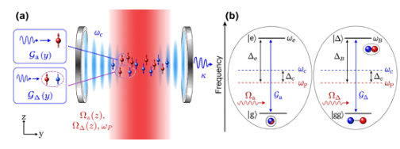
<figcaption class="paper-figure-caption"><b>Fig 1.</b> FIG. 1. (a) Scheme of a two-component Fermi gas inside a planar single-mode optical cavity of width κ with transverse laser illumination. The cavity mode of frequency ωc is coupled to an internal atomic transition with coupling amplitude Ga(y) and to a molecular resonance with coupling strength G∆(y). The transverse plane wave pump laser of frequency ωP couples to both resonances, the single atom transition with strength Ωa(z) as well as the atom pair resonance with Ω∆(z). (b) Sketch of relevant optical transitions for single atoms |g⟩↔|e⟩ (left) and atom-pairs |gg⟩↔|∆⟩(right). The pump frequency detunings are denoted by ∆c, ∆e, and ∆B for the cavity, excited and molecular state,...</figcaption>
</figure>
<figure class="paper-figure-card">
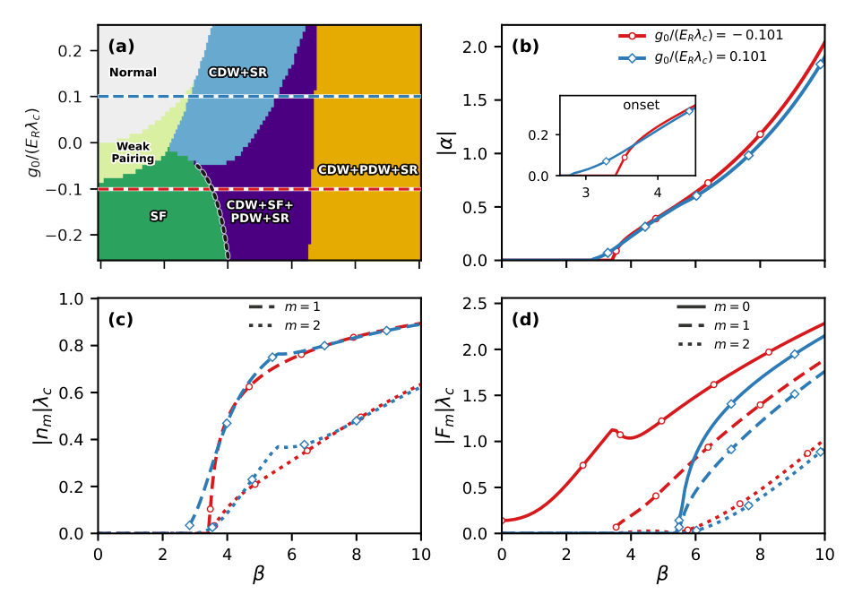
<figcaption class="paper-figure-caption"><b>Fig 2.</b> FIG. 2. Mean-field phase diagram and signatures of self-organization. (a) Zero temperature phase diagram as a function of the pump strength β (dimensionless) and the contact interaction strength g0/(ERλc) (dimensionless). The dashed horizontal lines mark cuts at g0/(ERλc) = ±0.101 shown in the following plots. The black dotted curve shows the analytical prediction. The labels denote the normal, superfluid (SF), charge-density-wave (CDW), pair-density-wave (PDW), and superradiant (SR) phases. The pale green region “weak pairing” corresponds to weak effective attraction, for which the exponentially small pairing amplitude is below our numerical accuracy. (b) Intra-cavity field amplitude |α|...</figcaption>
</figure>
<figure class="paper-figure-card">
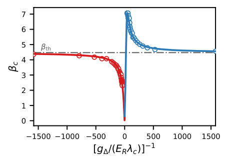
<figcaption class="paper-figure-caption"><b>Fig 3.</b> FIG. 3. Fano-type superradiant phase boundary in the strongly attractive regime. The critical pump amplitude βc to the ordered phase is shown as a function of the dimensionless inverse atom-pair dispersive coupling x = ERλc/g∆. Red (blue) circles correspond to g∆&lt; 0 (&gt; 0). The solid curve show the Fano-shape fit to the threshold pump intensity β2 c(x). The horizontal dash-dotted line marks the fitted background βth. The parameters: N↑= N↓= 1 per unit cell, g0/(ERλc) ≃ −3.04, ga/ER ≃−0.38, ∆c/ER ≃−4.05, and κ/ER ≃0.10.</figcaption>
</figure>
</div>

<p><strong>Summary.</strong> This research uses numerical simulations to study how coupling a degenerate Fermi gas to an optical cavity influences the simultaneous development of density and pairing orders. The authors demonstrate that the cavity field fundamentally alters the system's ground state, leading to distinct intertwined phases depending on the nature of the atomic interactions. This work highlights the potential of cavity QED to realize and control complex, multi-ordered quantum states.</p>
<p><strong>Why it may be interesting.</strong> This work is highly relevant as it explores how cavity-mediated light-matter interactions can engineer and stabilize exotic, multi-component ordered states (like intertwined CDW/PDW) in ultracold atomic systems, bridging quantum optics and many-body physics.</p>
<details>
<summary>Detailed structure</summary>
<p><strong>Main problem.</strong> The paper investigates the interplay and potential intertwining of density ordering and pairing order in a degenerate Fermi gas when coupled to an optical cavity.</p>
<p><strong>Main result.</strong> The cavity-induced interactions can support intertwined fermionic orders, leading to distinct phase transitions depending on whether the bare interaction is repulsive or attractive.</p>
<p><strong>Method.</strong> The study employs extensive numerical simulations using the Hartree-Fock-Bogoliubov (HFB) formalism to solve the mean-field Hamiltonian.</p>
<p><strong>Model / system.</strong> The system is a two-component degenerate Fermi gas trapped in a planar optical cavity, driven by a transverse pump laser, allowing for simultaneous control over density and pairing via cavity coupling.</p>
<p><strong>Key observables.</strong> Charge-Density-Wave (CDW) instability, Pair-Density-Wave (PDW) instability, superfluid coherence, and the cavity field amplitude $|\alpha|$.</p>
<p><strong>Important parameters / regimes.</strong> Bare atom-atom interaction ($g_0$), cavity-induced single-atom interaction ($g_a$), and cavity-induced pair interaction ($g_\Delta$), as well as the pumping strength ($eta$).</p>
<p><strong>Assumptions / limitations.</strong> The analysis uses a mean-field description and operates in the far off-resonant dispersive regime, allowing for adiabatic elimination of excited states.</p>
<p><strong>Figures summary.</strong> Figures illustrate the setup scheme, phase diagrams showing transitions between Normal, SF, CDW, and PDW phases based on interaction strength and pumping, and plots detailing the evolution of density and pairing harmonics.</p>
<p><strong>Paper structure.</strong> The paper progresses from defining the physical setup and Hamiltonian to analyzing the system in different interaction regimes (repulsive vs. attractive) and finally detailing the joint instability leading to intertwined CDW+PDW states.</p>
</details>
<details>
<summary>Abstract</summary>
<p>Recent quantum gas cavity-QED experiments demonstrated simultaneous coupling of photons to single atom transitions as well as correlated pairs of ultracold fermions trapped inside optical cavities. This enables simultaneous control over density ordering and pairing. Using extensive numerical simulations, we show that in a transversely driven, two-component degenerate Fermi gas, the interplay of cavity-induced and bare atom--atom interactions controls not only the power threshold for self-organization, but also the type of spatial ordering in the $\mathbb Z_2$-symmetry-broken superradiant state. In the repulsive interaction regime, unpaired or weakly paired fermions first self-organize through a charge-density-wave instability, and finite-momentum pairing only occurs at much stronger pump strengths. In contrast, an attractive superfluid undergoes a joint density--pairing instability, directly entering into intertwined phase with charge-density-wave and pair-density-wave orders. At strong pumping the photon-enhanced pair interaction generates localized density and pairing order even when the bare contact interaction is repulsive. In this cavity-dominated regime strong spatial localization suppresses the long range superfluid coherence. Our results identify the role of cavity-induced atomic interactions in supporting intertwined fermionic orders and pave the way for exploring exotic states with multiple orders in highly controlled hybrid light-matter systems.</p>
</details>
<p><sub><a href="#top">↑ back to top</a></sub></p>

<p><a id="paper-2609.18841"></a></p>
<h3 id="a-first-introduction-to-matrix-product-state-algorithms-for-the-integration-of-lindblad-equation"><a href="http://arxiv.org/abs/2609.18841v1">A first introduction to Matrix Product State algorithms for the integration of Lindblad equation</a></h3>
<p><strong>Authors:</strong> Christophe Chatelain<br>
<strong>Type:</strong> theory · <strong>Category:</strong> numerical methods · <strong>PDF:</strong> <a href="https://arxiv.org/pdf/2609.18841v1">https://arxiv.org/pdf/2609.18841v1</a><br>
<strong>Analysis basis:</strong> full PDF text, analyzed in chunks
<strong>Topic relevance:</strong> 🔥 <code>methods for driven-dissipative</code> <strong>5/5</strong> · <code>correlated / nonlocal dissipation</code> <strong>3/5</strong> · <code>driven-dissipative phase transition</code> <strong>3/5</strong> · <code>quantum measurements</code> <strong>3/5</strong> · <code>analog quantum simulation</code> <strong>2/5</strong> · <code>non-equilibrium universality</code> <strong>2/5</strong> · <code>Keldysh / 2PI / non-Gaussian methods</code> <strong>1/5</strong></p>
<div class="figure-strip-hint">↔ Scroll figures horizontally</div>
<div class="paper-figures-scroll">
<figure class="paper-figure-card">
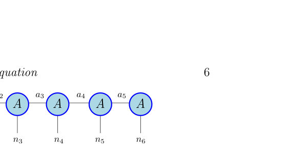
<figcaption class="paper-figure-caption"><b>Fig 1.</b> Figure 1. Diagrammatic representation, originally introduced by Penrose, of equation (20) in the case of chain of 6 sites [20, 21]. Tensors are represented as blue boxes. Each one of their legs corresponds to an index. Open legs are associated to physical indices ni while internal lines connecting the legs of two tensors are associated to virtual indices. The summation over the latter is implicit.</figcaption>
</figure>
<figure class="paper-figure-card">
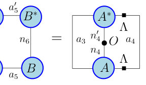
<figcaption class="paper-figure-caption"><b>Fig 2.</b> Figure 3. Diagrammatic representation of the expression of the quantum average O = ⟨ψ|O|ψ⟩of an observable acting only on site 4 when |ψ⟩is decomposed as a mixed MPS (25). The matrix elements On4,n′ 4 of the observable are depicted as black dot. Exploiting the left-canonical (23) and right-canonical (24) gauge conditions, the tensor network can be efficiently contracted leaving a smaller one involving only two matrices.</figcaption>
</figure>
<figure class="paper-figure-card">
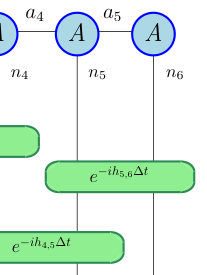
<figcaption class="paper-figure-caption"><b>Fig 3.</b> Figure 4. Diagrammatic representation of one iteration of the TEBD algorithm corresponding to the unitary time evolution of the MPS during a time step ∆t.</figcaption>
</figure>
<figure class="paper-figure-card">
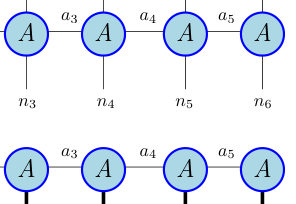
<figcaption class="paper-figure-caption"><b>Fig 4.</b> Figure 5. Diagrammatic representation of the density matrix (left) for a chain of 6 sites. Grouping together the indices ni and n′ i, successive SVD’s yields the MPS depicted on the right (below). Alternatively, the density matrix can be put under the form of a product of matrices depending on the two indices ni and n′ i at site i (above). The latter is referred to as a Matrix Product Operator (MPO) or a Matrix Product Density Operator (MPDO) to emphasize the fact that it corresponds to a density matrix.</figcaption>
</figure>
<figure class="paper-figure-card">
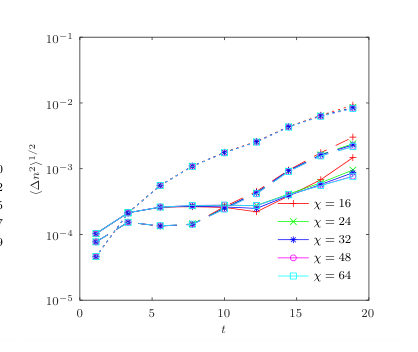
<figcaption class="paper-figure-caption"><b>Fig 5.</b> Figure 6. On the left, average density profile ⟨ni⟩of a free-fermion model with a particle source on the first site of the chain and a sink on the last one. The continuous lines correspond to the exact profile while the symbols were obtained numerically by vectorization of Lindblad equation and a MPDO representation with χ = 64 and</figcaption>
</figure>
</div>

<p><strong>Summary.</strong> This review introduces and compares four Matrix Product State (MPS) based algorithms for numerically solving the Lindblad equation in 1D quantum systems. It benchmarks these methods—including quantum trajectory and quantum state diffusion—against an exactly solvable free-fermion model. The paper provides valuable insights into the trade-offs between computational efficiency, accuracy, and the inherent limitations of MPS truncation when simulating open quantum dynamics.</p>
<p><strong>Why it may be interesting.</strong> This work is highly relevant for AMO physicists studying open quantum systems, as it provides a detailed, comparative guide on using tensor network methods (MPS) to simulate dissipation and environmental coupling, which is crucial for understanding realistic quantum devices.</p>
<details>
<summary>Detailed structure</summary>
<p><strong>Main problem.</strong> The paper aims to develop and compare various numerical algorithms for accurately integrating the Lindblad equation, which governs the time evolution of open quantum systems.</p>
<p><strong>Main result.</strong> The comparison shows that the quantum-state diffusion algorithm can outperform the quantum trajectory method at small times, although at large times, time discretization and MPS truncation errors dominate.</p>
<p><strong>Method.</strong> The core methodology involves representing the quantum state using Matrix Product States (MPS) and applying techniques like Time-Evolving Block Decimation (TEBD) to simulate the dynamics dictated by the Lindblad master equation.</p>
<p><strong>Model / system.</strong> The study uses a one-dimensional quantum lattice system, specifically a free-fermion model with particle sources and sinks, whose dynamics are described by the Lindblad equation.</p>
<p><strong>Key observables.</strong> Average density $\langle n_i(t) 
angle$, average current $\langle j_i 
angle$, and entanglement entropy ($S_E$).</p>
<p><strong>Important parameters / regimes.</strong> Bond dimension ($\chi$), time step ($\Delta t$), and the number of stochastic histories ($n_{	ext{conf}}$).</p>
<p><strong>Assumptions / limitations.</strong> The dynamics are assumed to be Markovian, the interaction is weak (Born approximation), and the MPS representation assumes low entanglement.</p>
<p><strong>Figures summary.</strong> Figures illustrate the average density and current profiles over time, comparing numerical results against exact solutions, and showing the mean square deviation of observables.</p>
<p><strong>Paper structure.</strong> The paper introduces the problem by defining the Lindblad equation for open systems, reviews the MPS formalism and TEBD for unitary evolution, and then compares four specific algorithms (two direct integration, two stochastic unravelings) using the free fermion model as a benchmark.</p>
</details>
<details>
<summary>Abstract</summary>
<p>In this introductory review, we present and compare four algorithms for the numerical integration of the Lindblad equation for one-dimensional quantum lattice systems. All four methods are based on Matrix Product State representations and can be viewed as extensions of the Time-Evolving Block Decimation (TEBD) algorithm to open quantum systems. Two approaches directly integrate the vectorized Lindblad equation, one of them explicitly enforcing the positivity of the density matrix. The other two rely on stochastic unravelings of the Lindblad equation, namely the quantum trajectory and quantum state diffusion approaches. We discuss the principles, numerical implementation, accuracy, and computational efficiency of the different methods, and benchmark them against an exactly solvable free fermion model.</p>
</details>
<p><sub><a href="#top">↑ back to top</a></sub></p>

<p><a id="paper-2609.18211"></a></p>
<h3 id="proof-of-heisenbergs-error-disturbance-relation-for-individual-measurements"><a href="http://arxiv.org/abs/2609.18211v1">Proof of Heisenberg's Error-Disturbance Relation for Individual Measurements</a></h3>
<p><strong>Authors:</strong> Seiji Kosugi<br>
<strong>Type:</strong> theory · <strong>Category:</strong> other · <strong>PDF:</strong> <a href="https://arxiv.org/pdf/2609.18211v1">https://arxiv.org/pdf/2609.18211v1</a><br>
<strong>Analysis basis:</strong> full PDF text, analyzed in chunks
<strong>Topic relevance:</strong> 🔥 <code>quantum measurements</code> <strong>5/5</strong></p>
<div class="figure-strip-hint">↔ Scroll figures horizontally</div>
<div class="paper-figures-scroll">
<figure class="paper-figure-card">
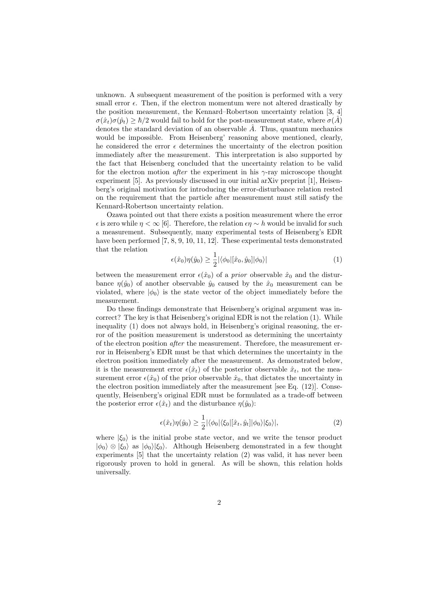
<figcaption class="paper-figure-caption"><b>Fig 1.</b> Low-resolution page preview, page 2</figcaption>
</figure>
<figure class="paper-figure-card">
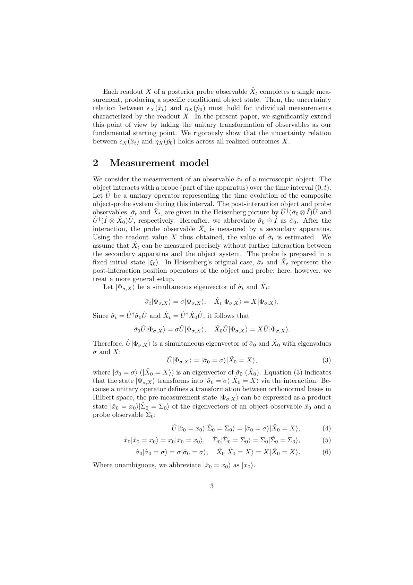
<figcaption class="paper-figure-caption"><b>Fig 2.</b> Low-resolution page preview, page 3</figcaption>
</figure>
<figure class="paper-figure-card">
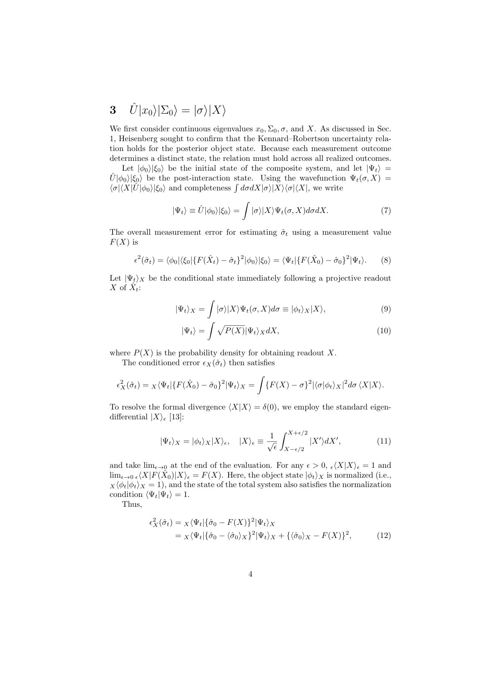
<figcaption class="paper-figure-caption"><b>Fig 3.</b> Low-resolution page preview, page 4</figcaption>
</figure>
<figure class="paper-figure-card">
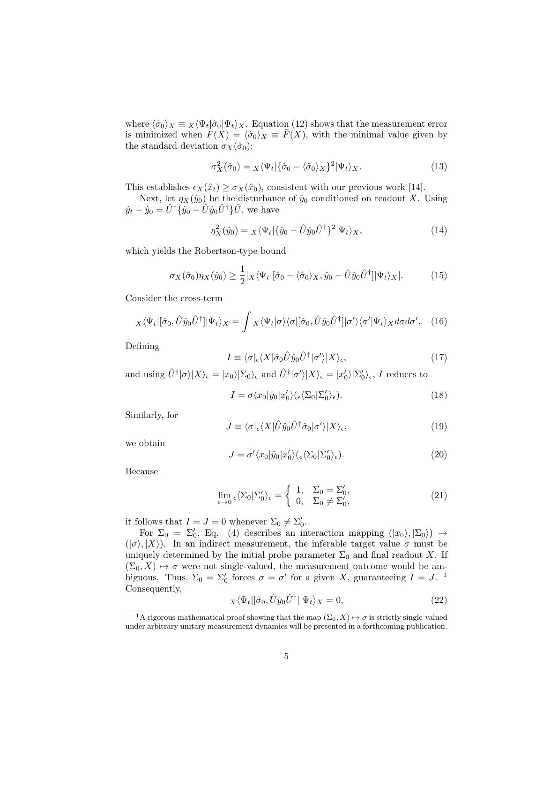
<figcaption class="paper-figure-caption"><b>Fig 4.</b> Low-resolution page preview, page 5</figcaption>
</figure>
<figure class="paper-figure-card">
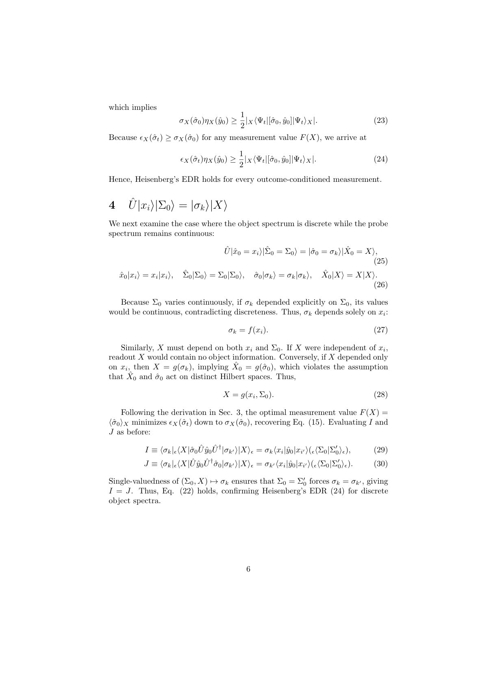
<figcaption class="paper-figure-caption"><b>Fig 5.</b> Low-resolution page preview, page 6</figcaption>
</figure>
</div>

<p><strong>Summary.</strong> This paper rigorously derives Heisenberg's Error-Disturbance Relation for quantum measurements, focusing on the error and disturbance associated with individual measurement outcomes. By using unitary transformation equations, the authors prove the EDR holds for specific readouts, providing a refined theoretical basis for understanding the fundamental trade-off inherent in quantum measurement processes.</p>
<p><strong>Why it may be interesting.</strong> This work refines the fundamental understanding of measurement back-action by providing a rigorous, outcome-conditional derivation of the EDR, which is crucial for theoretical work in quantum measurement theory and open quantum systems.</p>
<details>
<summary>Detailed structure</summary>
<p><strong>Main problem.</strong> The paper provides a rigorous derivation of Heisenberg's Error-Disturbance Relation (EDR) specifically for individual quantum measurements, addressing conceptual ambiguities in prior formulations.</p>
<p><strong>Main result.</strong> The EDR, $\epsilon_X(\hat{\sigma}_t) \eta_X(\hat{y}_0) \geq rac{1}{2} |\langle\Psi_t|[\hat{\sigma}_0, \hat{y}_0]|\Psi_t
angle_X|$, is proven to hold strictly at the level of individual measurement outcomes, and this relation also holds when errors are averaged over the unconditioned state.</p>
<p><strong>Method.</strong> The derivation utilizes the unitary transformation equations of observables ($\hat{U}$) to analyze the measurement process, calculating conditional variances ($\epsilon_X$) and disturbances ($\eta_X$) across various spectral regimes (discrete/continuous).</p>
<p><strong>Model / system.</strong> The model describes a quantum measurement interaction where an object observable ($\hat{\sigma}_0$) interacts with a probe observable ($\hat{y}_0$) over time $t$ via a unitary operator $\hat{U}$.</p>
<p><strong>Key observables.</strong> Measurement error $\epsilon_X(\hat{\sigma}_t)$ and disturbance $\eta_X(\hat{y}_0)$ associated with specific measurement outcomes $X$.</p>
<p><strong>Important parameters / regimes.</strong> The time evolution parameter $t$, and the structure of the observables ($\hat{\sigma}_0, \hat{y}_0$) relative to the unitary evolution $\hat{U}$.</p>
<p><strong>Assumptions / limitations.</strong> The derivation assumes that the mapping from initial state/readout to the measured observable is strictly single-valued for the EDR to hold.</p>
<p><strong>Paper structure.</strong> The paper builds upon preliminary work by first establishing the EDR for individual outcomes using unitary transformations, then verifying its consistency across different spectral types (discrete/continuous), and finally confirming the result in the standard von Neumann interaction model.</p>
</details>
<details>
<summary>Abstract</summary>
<p>Heisenberg originally envisioned the error-disturbance relation under the premise that the state after measurement must remain consistent with the Kennard-Robertson uncertainty relation. This implies that the measurement error must be formulated via a posterior observable $\hat{x}_t$, rather than a prior observable $\hat{x}_0$, because the posterior measurement error determines the post-measurement uncertainty of the electron. Building upon the preliminary conceptual foundation reported in arXiv:1504.03779, this paper presents a rigorous derivation of the error-disturbance principle formulated from the unitary transformation equations of observables. Each readout $X$ of a posterior probe observable $\hat{X}_t$ completes a single measurement event, producing a specific conditional object state. The Kennard-Robertson uncertainty relation must hold for these states. Specifically, we show that the uncertainty relation between the error $ε_{X}(\hat{x}_t)$ and the disturbance $η_{X}(\hat{p}_0)$ holds strictly at the level of individual measurements, characterized by the specific readout $X$. We also verify that conventional error-disturbance relations, where the errors are evaluated by averaging over the unconditioned state, hold true. Our results provide a refined theoretical basis for understanding the fundamental trade-off in individual measurement outcomes.</p>
</details>
<p><sub><a href="#top">↑ back to top</a></sub></p>

<p><a id="paper-2609.17785"></a></p>
<h3 id="exact-damping-basis-continued-fractions-for-few-atom-lasers-collective-correlations-beyond-second-order-cumulant-closure"><a href="http://arxiv.org/abs/2609.17785v1">Exact damping-basis continued fractions for few-atom lasers: collective correlations beyond second-order cumulant closure</a></h3>
<p><strong>Authors:</strong> Stephan Hartmann<br>
<strong>Type:</strong> theory · <strong>Category:</strong> other · <strong>PDF:</strong> <a href="https://arxiv.org/pdf/2609.17785v1">https://arxiv.org/pdf/2609.17785v1</a><br>
<strong>Analysis basis:</strong> full PDF text, analyzed in chunks
<strong>Topic relevance:</strong> 🔥 <code>Tavis-Cummings &amp; cavity-many-emitter</code> <strong>4/5</strong> · <code>correlated / nonlocal dissipation</code> <strong>3/5</strong> · <code>methods for driven-dissipative</code> <strong>3/5</strong> · <code>Dicke superradiance</code> <strong>2/5</strong> · <code>driven-dissipative phase transition</code> <strong>2/5</strong> · <code>superradiant laser</code> <strong>2/5</strong> · <code>Keldysh / 2PI / non-Gaussian methods</code> <strong>1/5</strong> · <code>analog quantum simulation</code> <strong>1/5</strong> · <code>non-equilibrium universality</code> <strong>1/5</strong> · <code>quantum measurements</code> <strong>1/5</strong></p>
<div class="figure-strip-hint">↔ Scroll figures horizontally</div>
<div class="paper-figures-scroll">
<figure class="paper-figure-card">
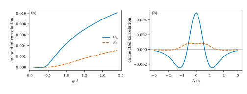
<figcaption class="paper-figure-caption"><b>Fig 1.</b> FIG. 1. Connected three-atom correlations Γ3 = C3z (solid) and K3 (dashed) at s = 0.6, A = 1, B = 0.7, C = B/2, ν = 0: (a) versus coupling at ∆= 0; (b) versus detuning at g = 1.1.</figcaption>
</figure>
<figure class="paper-figure-card">
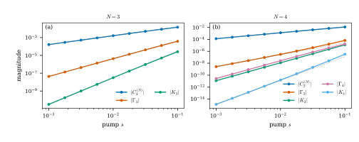
<figcaption class="paper-figure-caption"><b>Fig 2.</b> FIG. 2. Weak-pump hierarchy of connected correlations at the baseline parameters for (a) N = 3 and (b) N = 4. Dotted lines are the power laws s1, s2, s3, s4 anchored at the smallest pump.</figcaption>
</figure>
<figure class="paper-figure-card">

<figcaption class="paper-figure-caption"><b>Fig 3.</b> FIG. 3. Sector-resolved structure of the N = 3 stationary state at the baseline parameters. (a) Population of the J = 1/2 sector, peaking at 55% near s = 0.6. (b) Feeding rates Φ1/2 (solid) and Φ3/2 (dashed); inset: their ratio.</figcaption>
</figure>
<figure class="paper-figure-card">
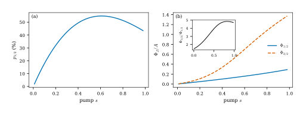
<figcaption class="paper-figure-caption"><b>Fig 4.</b> Figure 4 shows ⟨ˆn⟩, g(2)(0), and C(N) 2 for N = 1, . . . , 16 at three pump values in the baseline regime. Below inver- sion, s = 0.3, the photon number saturates at ⟨ˆn⟩≈0.27 while g(2)(0) rises to 2.15, slightly above thermal; at s = 0.6 it saturates at 1.61; at s = 0.9 the photon number grows linearly, 0.26 per atom, and g(2)(0) passes through</figcaption>
</figure>
<figure class="paper-figure-card">
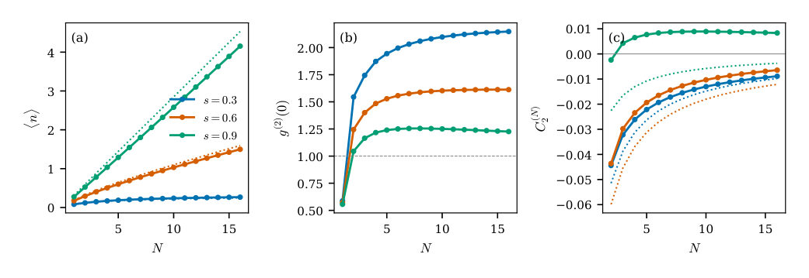
<figcaption class="paper-figure-caption"><b>Fig 5.</b> FIG. 4. Scaling with atom number at the baseline parameters for s = 0.3, 0.6, 0.9: (a) mean photon number, (b) g(2)(0), (c) pair coherence C(N) 2 . Symbols: exact continued fraction; dotted: the second-order cumulant closure, Eq. (32).</figcaption>
</figure>
</div>

<p><strong>Summary.</strong> This paper presents an exact theoretical method using continued fractions to solve the dynamics of few-atom lasers coupled to a cavity. By constructing a block-tridiagonal Liouvillian, the authors derive exact expressions for collective correlations and benchmark existing approximations. The results are crucial for understanding the true quantum nature of light emission in these systems, particularly highlighting where simple approximations break down.</p>
<p><strong>Why it may be interesting.</strong> This work provides a powerful, exact, and systematically improvable tool for analyzing open quantum systems in cavity QED, offering quantitative benchmarks against common, but often inaccurate, mean-field or cumulant approximations.</p>
<details>
<summary>Detailed structure</summary>
<p><strong>Main problem.</strong> To develop an exact theoretical framework for few-atom lasers, surpassing the limitations of standard approximations like second-order cumulant closure.</p>
<p><strong>Main result.</strong> The authors derive exact identities for collective correlations and show that the standard second-order cumulant closure fails qualitatively for inter-emitter coherence above inversion.</p>
<p><strong>Method.</strong> The method combines the Briegel--Englert damping basis for the cavity mode with the permutation-invariant Liouville basis for the atoms, leading to a block-tridiagonal Liouvillian solved via a matrix continued fraction.</p>
<p><strong>Model / system.</strong> The system models $N$ identical, incoherently pumped two-level emitters coupled symmetrically to one lossy cavity mode (Tavis–Cummings model). The dynamics are governed by a master equation incorporating cavity decay and atomic pumping/decay rates.</p>
<p><strong>Key observables.</strong> Photon number ($\langle \hat{n} 
angle$), pair coherence, emission spectrum $S(\omega')$, and various connected correlation functions.</p>
<p><strong>Important parameters / regimes.</strong> Number of emitters ($N$), cavity decay rate ($A$), and pumping/decay rates ($B, s, C$). The analysis covers the few-quanta regime and the good-cavity limit.</p>
<p><strong>Assumptions / limitations.</strong> The core assumption is that the combined Liouvillian structure allows for a block-Jacobi reduction, leading to a uniquely solvable linear matrix equation for the stationary state.</p>
<p><strong>Figures summary.</strong> Figures show time evolution plots comparing exact results to approximations for photon number and $g^{(2)}(0)$, and illustrate the spectral pole width for small $N$.</p>
<p><strong>Paper structure.</strong> The paper establishes the exact block-Jacobi operator structure, solves the stationary state using a matrix continued fraction leading to a solvable Riccati equation, and then applies this machinery to derive exact correlation identities and benchmark existing approximations.</p>
</details>
<details>
<summary>Abstract</summary>
<p>We combine the Briegel--Englert damping basis of a lossy cavity mode with the permutation-invariant Liouville basis of \(N\) identical, incoherently pumped two-level emitters. The resulting Liouvillian is exactly block tridiagonal in a single radial field index, with atomic blocks of dimension \(\binom{N+3}{3}\). The stationary state follows from a matrix continued fraction whose asymptotic closure is a linear matrix equation that we prove to be uniquely solvable throughout the dissipative regime \(A>0\), and the same construction in the coherence-one sector yields the emission spectrum. The method is validated against direct diagonalization, weak-pump perturbation theory, and closed-system spectra, reaches \(N=16\) in tens of seconds in the few-quanta regime, and has a quantified precision limit at large photon number. We use it to derive an exact two-atom photon-balance identity that isolates the cavity-induced pair coherence and relates it to a singlet--triplet population difference; to establish an exact pump-order hierarchy of connected correlations for a zero-temperature cavity and a parity property of the minimal collective-spin sector; and to benchmark the second-order cumulant closure used in few-emitter laser theory, which we find to be semi-quantitative for the photon number but to predict the wrong sign of the inter-emitter coherence above inversion. In a good-cavity regime the exact solution shows near-Poissonian statistics and strong line narrowing for two and three emitters.</p>
</details>
<p><sub><a href="#top">↑ back to top</a></sub></p>

<p><a id="paper-2609.18575"></a></p>
<h3 id="filter-free-indistinguishable-photon-generation-from-continuous-wave-driven-integrated-microresonators"><a href="http://arxiv.org/abs/2609.18575v1">Filter-Free Indistinguishable Photon Generation from Continuous-Wave-Driven Integrated Microresonators</a></h3>
<p><strong>Authors:</strong> Ruiyang Chen, Sicheng Zeng, Yuan Chen, Sanli Huang, Zeying Zhong, Zhen Chen, Xue Bai, Yi-Han Luo, Junqiu Liu<br>
<strong>Type:</strong> experiment · <strong>Category:</strong> quantum information and computing · <strong>PDF:</strong> <a href="https://arxiv.org/pdf/2609.18575v1">https://arxiv.org/pdf/2609.18575v1</a><br>
<strong>Analysis basis:</strong> full PDF text, analyzed in chunks
<strong>Topic relevance:</strong> 🔥 <code>QC/QI experiment</code> <strong>4/5</strong> · 🔥 <code>quantum optics experiment</code> <strong>4/5</strong> · <code>interference shaping light</code> <strong>3/5</strong> · <code>quantum measurements</code> <strong>3/5</strong> · <code>methods for driven-dissipative</code> <strong>2/5</strong> · <code>Full counting statistics</code> <strong>1/5</strong> · <code>analog quantum simulation</code> <strong>1/5</strong> · <code>correlated / nonlocal dissipation</code> <strong>1/5</strong> · <code>driven-dissipative phase transition</code> <strong>1/5</strong></p>
<div class="figure-strip-hint">↔ Scroll figures horizontally</div>
<div class="paper-figures-scroll">
<figure class="paper-figure-card">
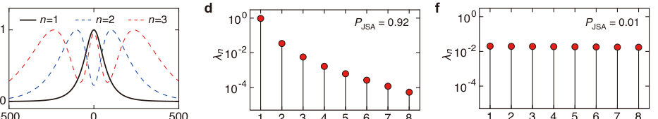
<figcaption class="paper-figure-caption"><b>Fig 1.</b> Figure 1. Spectral purity of a microresonator-based photon-pair source. a, Schematic of photon-pair generation via cavity-enhanced SFWM in an integrated microresonator. b, Simulated joint spectrum for a microresonator driven by a pulsed pump with 1-GHz bandwidth. c, Normalized power spectra of the first three Schmidt modes (n = 1–3) under pulsed pumping. d, Schmidt coefficients λn for modes n = 1–8 under pulsed pumping, yielding a JSA-derived spectral purity of PJSA = 0.92. e, Simulated, highly correlated, joint spectrum for a microresonator under CW pumping with 50-kHz linewidth. f, Uniform distribution of Schmidt coefficients λn under CW pumping, resulting in a vanishingly low spectral...</figcaption>
</figure>
<figure class="paper-figure-card">
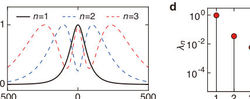
<figcaption class="paper-figure-caption"><b>Fig 2.</b> Figure 1a illustrates photon-pair generation through cavity-enhanced spontaneous four-wave mixing (SFWM)30. Two pump photons of frequency ωp/2π are converted into a signal–idler pair constrained by energy conservation 2ωp = ωs + ωi, where ωs/i/2π represents the resonant frequency of the respective mode. For the remainder of this discussion, we refer ωp/s/i/2π to the frequency detuning to the corresponding resonance. The generated state is described by the JSA:</figcaption>
</figure>
<figure class="paper-figure-card">
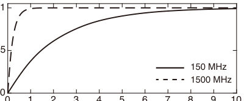
<figcaption class="paper-figure-caption"><b>Fig 3.</b> Figure 2. Detector-conditioned purity and intrinsic heralding efficiency. a, Detector-conditioned purity P as a function of T for κ/2π = 150 and 1500 MHz. b, Intrinsic heralding efficiency η as a function of T ′ for κ/2π = 150 and 1500 MHz, with T = 100 ps.</figcaption>
</figure>
<figure class="paper-figure-card">
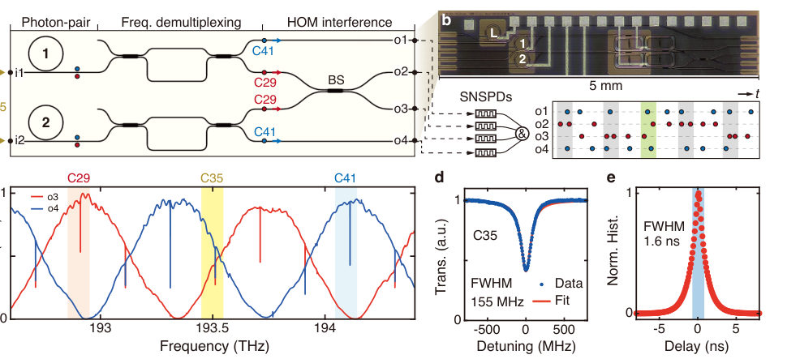
<figcaption class="paper-figure-caption"><b>Fig 4.</b> Figure 3. Chip layout and experimental characterization. a, Schematic of the chip layout and detection scheme. Two microresonators are pumped at the C35 resonance (193.5 THz), generating C29 signal and C41 idler photon pairs. UMZIs demultiplex these channels, routing C41 idlers to ports o1 and o4 to herald the two C29 signal photons, which interfere on the BS. All four outputs are detected by SNSPDs for coincidence analysis. Inset: standard single-window coincidence logic, where green windows represent registered fourfold events and gray windows indicate HOM-suppressed cases. b, Optical micrograph of the Si3N4 photonic integrated circuits, showing two photon-source microresonators and an...</figcaption>
</figure>
<figure class="paper-figure-card">
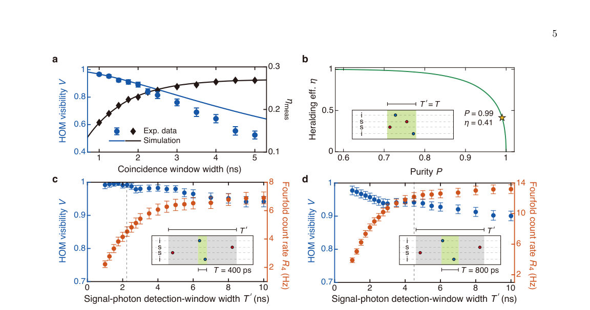
<figcaption class="paper-figure-caption"><b>Fig 5.</b> Figure 4. Photon-pair performance. a, Measured V and ηmeas versus the coincidence window width under single-window coincidence logic with κ/2π = 155 MHz. b, Purity–efficiency trade-off under single-window coincidence logic. Inset, fourfold coincidence under single-window coincidence logic used in a and b, with signals and idlers sharing identical detection-window width. c, d, Measured V and R4 versus T ′ for T = 400 and 800 ps, respectively. Insets, fourfold coincidence under double- window coincidence logic, enabling independently configured T and T ′. Dashed lines mark the operating points V = 0.992(8) at R4 = 4.5(3) Hz and V = 0.942(12) at R4 = 12.2(6) Hz. All reported V values are...</figcaption>
</figure>
</div>

<p><strong>Summary.</strong> This paper presents an experimental demonstration of generating highly indistinguishable photon pairs using integrated silicon nitride microresonators pumped by a continuous-wave laser. By developing and implementing a double-window coincidence detection scheme, the authors overcome theoretical limitations that previously predicted poor performance. This establishes CW-driven high-Q resonators as a robust and scalable platform for quantum network applications.</p>
<p><strong>Why it may be interesting.</strong> This work provides a crucial experimental blueprint for realizing quantum network primitives using integrated photonics, directly addressing the scalability and performance limitations inherent in CW-driven sources, which is highly relevant to quantum optics and quantum information.</p>
<details>
<summary>Detailed structure</summary>
<p><strong>Main problem.</strong> The primary challenge is generating scalable, high-indistinguishability photon sources required for quantum networks, as conventional theory predicts poor Hong-Ou-Mandel (HOM) interference visibility from independent continuous-wave (CW)-driven microresonators.</p>
<p><strong>Main result.</strong> The authors demonstrated that by employing a detector-conditioned heralded state approach, they achieved high HOM visibilities (e.g., 0.992) and near-unity indistinguishability and heralding efficiency without spectral filtering.</p>
<p><strong>Method.</strong> The work moves beyond source-only descriptions by analyzing the system using finite-time detection logic, specifically implementing a double-window coincidence detection scheme.</p>
<p><strong>Model / system.</strong> The experiment utilizes integrated high-Q silicon nitride microresonators pumped by a CW laser, generating photon pairs via cavity-enhanced spontaneous four-wave mixing. The setup involves complex on-chip routing, interferometry, and superconducting nanowire single-photon detectors (SNSPDs).</p>
<p><strong>Key observables.</strong> HOM visibility (V), detector-conditioned purity (P), and intrinsic heralding efficiency ($\eta$).</p>
<p><strong>Important parameters / regimes.</strong> High-Q silicon nitride platform, CW pumping, double-window coincidence logic, and specific count rates (e.g., 4.5 Hz).</p>
<p><strong>Assumptions / limitations.</strong> The analysis assumes a flat spectral acceptance window bandwidth B &gt;&gt; $\kappa$, and the key technical advancement relies on decoupling the purity and efficiency measurements via double-window logic.</p>
<p><strong>Figures summary.</strong> Figures illustrate the failure of the JSA model for CW sources, show how P and $\eta$ approach unity by optimizing detection windows ($T$ and $T'$), and detail the comparison between single-window and double-window coincidence logic.</p>
<p><strong>Paper structure.</strong> The paper first identifies the theoretical limitation of source-only descriptions. It then introduces the detector-conditioned state formalism. The experimental section details the $ ext{Si}_3   ext{N}_4$ chip fabrication and setup. The core argument is built by comparing the performance under single-window versus the superior performance achieved using double-window coincidence logic.</p>
</details>
<details>
<summary>Abstract</summary>
<p>Quantum networks require scalable photon sources combining narrow linewidth, high efficiency, and high indistinguishability. Microresonator photon-pair sources are promising candidates, yet a source-only description based on the joint spectral amplitude (JSA) predicts near-zero Hong-Ou-Mandel (HOM) interference visibility between photons generated by independent, CW-driven microresonators. In this work, we show that the observed HOM interference is not determined by the JSA alone. By combining finite-time detection with cavity-enhanced spontaneous four-wave mixing, we characterize a detector-conditioned heralded state governed by the idler-photon detection window. We further demonstrate that independently optimizing the idler and signal detection windows allows both heralded-photon indistinguishability and intrinsic heralding efficiency to approach unity, without spectral filtering or complex source engineering. Utilizing integrated high-$Q$ silicon nitride microresonators, we achieve HOM visibilities of 0.992(8) and 0.942(12), without background subtraction, at fourfold count rates of 4.5(3) and 12.2(6) Hz, respectively. Our work establishes CW-driven high-$Q$ microresonators as a robust and scalable platform for quantum-network primitives.</p>
</details>
<p><sub><a href="#top">↑ back to top</a></sub></p>

<p><a id="paper-2609.18547"></a></p>
<h3 id="giant-atom-mediated-photon-blockade"><a href="http://arxiv.org/abs/2609.18547v1">Giant-atom-mediated photon blockade</a></h3>
<p><strong>Authors:</strong> C. Cui, W. Y. Hu, Y. Q. Ji, H. T. Cui, Yan-Hui Zhou, H. Z. Shen<br>
<strong>Type:</strong> theory · <strong>Category:</strong> other · <strong>PDF:</strong> <a href="https://arxiv.org/pdf/2609.18547v1">https://arxiv.org/pdf/2609.18547v1</a><br>
<strong>Analysis basis:</strong> full PDF text, analyzed in chunks
<strong>Topic relevance:</strong> 🔥 <code>interference shaping light</code> <strong>4/5</strong> · <code>Tavis-Cummings &amp; cavity-many-emitter</code> <strong>3/5</strong> · <code>correlated / nonlocal dissipation</code> <strong>3/5</strong> · <code>analog quantum simulation</code> <strong>2/5</strong> · <code>driven-dissipative phase transition</code> <strong>2/5</strong> · <code>methods for driven-dissipative</code> <strong>2/5</strong> · <code>Full counting statistics</code> <strong>1/5</strong> · <code>Keldysh / 2PI / non-Gaussian methods</code> <strong>1/5</strong> · <code>quantum measurements</code> <strong>1/5</strong> · <code>quantum optics experiment</code> <strong>1/5</strong></p>
<div class="figure-strip-hint">↔ Scroll figures horizontally</div>
<div class="paper-figures-scroll">
<figure class="paper-figure-card">
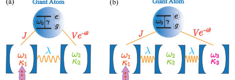
<figcaption class="paper-figure-caption"><b>Fig 1.</b> FIG. 1: Schematic of a two-level giant atom (transition frequency ω0, dissipation γ) coupled to (a) two cavities and (b) three cavities, where the intercavity coupling coefficient is λ. The atom couples to the first cavity (frequency ω1, dissipation κ1) with real coupling coefficient J and (a) to the second cavity (frequency ω2, dissipation κ2) with complex coupling coefficient V e−iθ (strength V , phase θ), (b) to the third cavity (frequency ω3, dissipation κ3) with complex coupling coefficient V e−iθ, where the second cavity’s frequency and dissipation are ω2 and κ2, respectively. The first cavity is mediated via driving field (strength F, frequency ωl).</figcaption>
</figure>
<figure class="paper-figure-card">
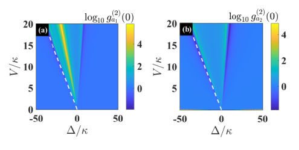
<figcaption class="paper-figure-caption"><b>Fig 2.</b> FIG. 3: Second-order correlation function (solved by Eq. (4)) with giant atom and two cavities system on a logarithmic scale log10 g(2) a1 (0) and log10 g(2) a2 (0) as a function of detuning ∆and cou- pling strength V with a1 in (a) and a2 in (b). CPBs occur simultane- ously in two cavities at the same location at ∆opt = −2V in Eq. (9) (corresponding to two white dashed lines) for (a)(b). The other pa- rameters chosen are F = 0.01κ and θ = 0.</figcaption>
</figure>
<figure class="paper-figure-card">
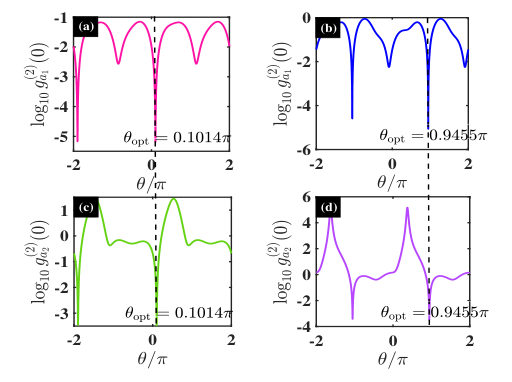
<figcaption class="paper-figure-caption"><b>Fig 3.</b> FIG. 4: log10 g(2) o (0) (solved by Eq. (4)) with giant atom and two cavities system as a function of phase θ with a1 in (a)(b) and a2 in (c)(d). The black dashed lines denote the optimal phase θopt given by Eq. (16). The parameters chosen are (a)(c) λ = 4κ, Jopt = −0.7379κ, Vopt = 1.4637κ, F = 0.01κ, and ∆opt = 0.0805κ; (b)(d) λ = 5.9693κ, Jopt = −1.4993κ, Vopt = 2κ, F = 0.015κ, and ∆opt = −0.2095κ. UPBs occur simultaneously in two cavities at the same location at θopt = 0.1014π (with period 2π) for (a)(c), also at θopt = 0.9455π (with period 2π) for (b)(d).</figcaption>
</figure>
<figure class="paper-figure-card">
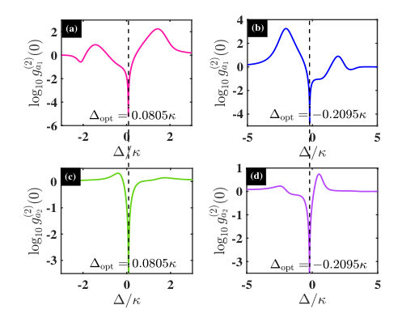
<figcaption class="paper-figure-caption"><b>Fig 4.</b> FIG. 5: log10 g(2) o (0) (solved by Eq. (4)) with giant atom and two cavities system as a function of detuning ∆with a1 in (a)(b) and a2 in (c)(d) at optimal phases determined by Eq. (16). The parame- ters chosen are (a)(c) θopt = 0.1014π; (b)(d) θopt = 0.9455π. The black dashed lines correspond to the optimal detuning ∆opt given by Eq. (16). UPBs occur simultaneously in two cavities at the same lo- cation at ∆opt = 0.0805κ for (a)(c), also at ∆opt = −0.2095κ for (b)(d). The other parameters chosen are the same as those in Fig. 4.</figcaption>
</figure>
<figure class="paper-figure-card">
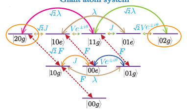
<figcaption class="paper-figure-caption"><b>Fig 5.</b> FIG. 8: Level diagram of giant atom coupled to two cavities sys- tem. It depicts the zero-, one-, and two-photon states and transition paths responsible for the destructive interference that induces strong photon antibunching. States are labeled as |mnα⟩, where |m⟩(|n⟩) denotes photon number state in cavity a1 (a2), while |α⟩(α = g, e) indicates the atom state.</figcaption>
</figure>
</div>

<p><strong>Summary.</strong> This paper explores photon blockade in quantum systems using giant atoms coupled to multiple optical cavities. It demonstrates that the extended nature of these atoms enables the simultaneous occurrence of unconventional and conventional photon blockades through destructive interference pathways. The theoretical analysis uses master equations and $g^{(2)}(0)$ measurements to map out the required physical parameters for this advanced quantum control.</p>
<p><strong>Why it may be interesting.</strong> This work directly addresses advanced topics in cavity QED and open quantum systems by extending blockade phenomena from simple point atoms to complex, spatially extended giant atoms, opening new avenues for quantum light sources.</p>
<details>
<summary>Detailed structure</summary>
<p><strong>Main problem.</strong> The paper investigates the realization and control of simultaneous unconventional and conventional photon blockades in quantum systems mediated by giant atoms.</p>
<p><strong>Main result.</strong> The spatially extended nature of giant atoms allows for simultaneous photon blockades (both conventional and unconventional) in multiple coupled cavities via multipath destructive interference, a feat impossible in simple point atom systems.</p>
<p><strong>Method.</strong> The analysis uses the Lindblad master equation to model system dynamics and calculates the second-order correlation function, g^(2)(0), to diagnose photon statistics.</p>
<p><strong>Model / system.</strong> The system consists of a giant atom coupled to two or three optical cavities. The Hamiltonian and dynamics are described using cavity and atomic coupling strengths, detunings, and driving fields.</p>
<p><strong>Key observables.</strong> Second-order correlation function g^(2)(0) (where &lt; 1 indicates blockade), and the detection of simultaneous CPBs and UPBs.</p>
<p><strong>Important parameters / regimes.</strong> Cavity frequencies ($\omega_j$), atom transition frequency ($\omega_0$), coupling strengths ($J, V$), inter-cavity coupling ($\lambda$), and detuning ($\Delta$).</p>
<p><strong>Assumptions / limitations.</strong> Dissipation rates are often assumed equal ($\kappa_1 = \kappa_2 = \kappa_3 = \gamma$), and specific resonance conditions are used for detailed blockade analysis.</p>
<p><strong>Figures summary.</strong> Figures illustrate schematic coupling structures, level diagrams showing CPB mechanisms, and plots of log10 g^(2)(0) vs. detuning/coupling strength demonstrating the optimal conditions for simultaneous blockades.</p>
<p><strong>Paper structure.</strong> The paper progresses from establishing the general Hamiltonian and master equation for $N=2$ and $N=3$ cavities, to deriving the diagnostic tool $g^{(2)}(0)$, and finally demonstrating the physical mechanisms and optimal parameters for achieving simultaneous CPBs and UPBs.</p>
</details>
<details>
<summary>Abstract</summary>
<p>Photon blockade is a phenomenon where the presence of system nonlinearity causes the output to consist of single photons, which has been extensively studied in point atom systems, but it is barely explored in giant atom ones. In this paper, we propose giant atom-mediated photon blockade scheme based on two cavities and three cavities systems with driving field applied to the first cavity. We show that simultaneous unconventional photon blockades (UPBs) can not occur in the point atom system (the atom coupling only to the leftmost cavity) due to there always existing a cavity to have a single path. In contrast, the spatially extended nature of giant atom enables coupling to multiple cavities and allows for the introduction of a phase and coupling strength. Consequently, simultaneous UPBs in multiple cavities can be obtained due to the multipath destructive interference. Moreover, by manipulating the detuning, we observe simultaneous conventional photon blockades (CPBs) in multiple cavities. Finally, we study simultaneous two-photon blockades (2PBs) in point atom multiple cavities system.</p>
</details>
<p><sub><a href="#top">↑ back to top</a></sub></p>

<p><a id="paper-2609.18530"></a></p>
<h3 id="programmable-hong-ou-mandel-interference-in-a-giant-atom-beam-splitter"><a href="http://arxiv.org/abs/2609.18530v1">Programmable Hong--Ou--Mandel interference in a giant-atom beam splitter</a></h3>
<p><strong>Authors:</strong> Ruolin Chai, Lei Du, Guoqing Cai, Alejandro Vivas-Viaña, Anton Frisk Kockum, Yong Li<br>
<strong>Type:</strong> theory · <strong>Category:</strong> other · <strong>PDF:</strong> <a href="https://arxiv.org/pdf/2609.18530v1">https://arxiv.org/pdf/2609.18530v1</a><br>
<strong>Analysis basis:</strong> full PDF text, analyzed in chunks
<strong>Topic relevance:</strong> 🔥 <code>interference shaping light</code> <strong>4/5</strong> · <code>Full counting statistics</code> <strong>3/5</strong> · <code>analog quantum simulation</code> <strong>3/5</strong> · <code>Tavis-Cummings &amp; cavity-many-emitter</code> <strong>2/5</strong> · <code>methods for driven-dissipative</code> <strong>2/5</strong> · <code>quantum measurements</code> <strong>2/5</strong> · <code>Keldysh / 2PI / non-Gaussian methods</code> <strong>1/5</strong> · <code>correlated / nonlocal dissipation</code> <strong>1/5</strong> · <code>driven-dissipative phase transition</code> <strong>1/5</strong> · <code>quantum optics experiment</code> <strong>1/5</strong></p>
<div class="figure-strip-hint">↔ Scroll figures horizontally</div>
<div class="paper-figures-scroll">
<figure class="paper-figure-card">
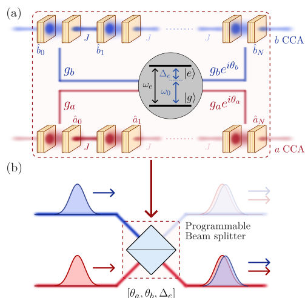
<figcaption class="paper-figure-caption"><b>Fig 1.</b> FIG. 1. Schematic of the system. (a) A two-level giant atom (GA) is coupled at two spatially separated points, m = 0 and m = N, to two coupled-cavity arrays (CCAs), labeled a and b, with coupling strengths ga and gb, respectively. The couplings at m = N acquire tunable phases θa and θb. (b) Two single- photon wave packets incident through different CCAs scatter from the GA, which acts as a programmable beam splitter. Tuning the coupling phases θa, θb and the GA-cavity detuning ∆e controls the resulting four-port two-photon output.</figcaption>
</figure>
<figure class="paper-figure-card">
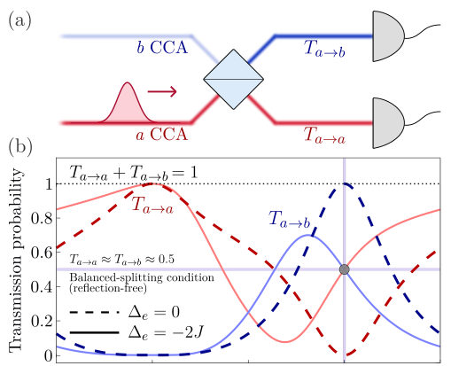
<figcaption class="paper-figure-caption"><b>Fig 2.</b> FIG. 2. Phase-controlled single-photon transmission. (a) Schematic of single-photon scattering for a photon incident through the a CCA. The transmitted photon can exit through either the a or b CCA, with transmission probabilities Ta→a and Ta→b, respectively. (b) Transmission probabilities Ta→a (red) and Ta→b (blue) as a function of the common coupling phase θa = θb ≡θ, for detunings ∆e = 0 (dashed lines) and ∆e = −2J (solid lines). The dotted horizontal line indicates the reflection-free condition Ta→a +Ta→b = 1. The horizontal and vertical shaded regions indicate Ta→a ≈Ta→b ≈0.5 (un- der the reflection-free condition) and θ ≈π/2, respectively, while the filled circle marks the...</figcaption>
</figure>
<figure class="paper-figure-card">
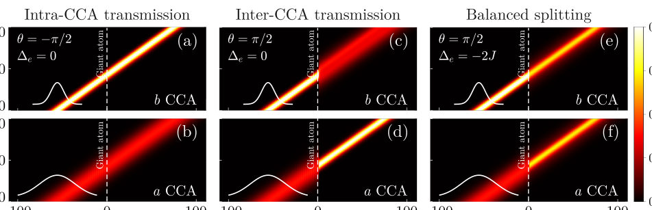
<figcaption class="paper-figure-caption"><b>Fig 3.</b> FIG. 3. Time evolution of the local photon occupations in the two CCAs for two incident Gaussian single-photon wave packets. Different widths, wa = 25 and wb = 9, are used to visually distinguish the two wave packets. The upper and lower panels show the occupations in the b and a CCAs, respectively. (a, b) Intra-CCA transmission for θ = −π/2 and ∆e = 0. (c, d) Inter-CCA transfer for θ = π/2 and ∆e = 0. (e, f) Balanced splitting for θ = π/2 and ∆e = −2J, corresponding to the single-photon 50:50 beam-splitter condition. The white curves indicate the initial spatial profiles of the incident wave packets, while the vertical dashed line marks the location of the giant atom. Parameters: xa = xb =...</figcaption>
</figure>
<figure class="paper-figure-card">
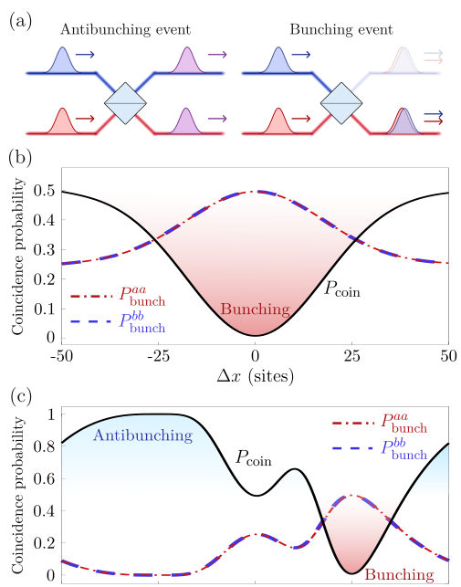
<figcaption class="paper-figure-caption"><b>Fig 4.</b> FIG. 4. Programmable HOM interference. (a) Representa- tive bunching and antibunching events in the four-port out- put geometry. (b) Generalized coincidence probability Pcoin and bunching probabilities P aa bunch and P bb bunch as functions of the initial relative displacement ∆x = xa −xb between two identical Gaussian wave packets, one incident through each CCA, at the balanced-splitting point θ = π/2 and ∆e = −2J. (c) Same probabilities as functions of the coupling phase θ for fully overlapping inputs (xa = xb = −50). The shaded regions indicate bunching- and antibunching-dominated regimes. Pa- rameters: N = 1, wa = wb = 25, ga = gb = J, and ka = kb = π/2.</figcaption>
</figure>
<figure class="paper-figure-card">
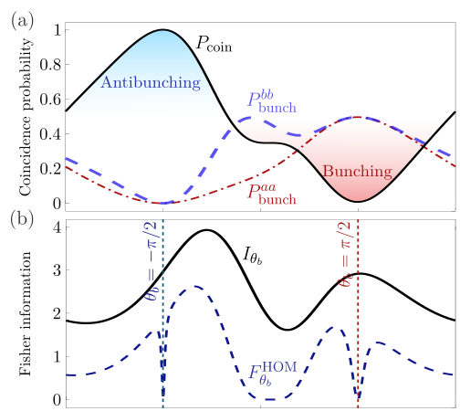
<figcaption class="paper-figure-caption"><b>Fig 5.</b> FIG. 5. Coupling-phase estimation via HOM statistics. (a) Generalized coincidence probability Pcoin and the same- port bunching probabilities P aa bunch and P bb bunch as func- tions of θb, with the reference phase fixed at θa = π/2. The shaded regions indicate bunching- and antibunching- dominated regimes. (b) Classical Fisher information F HOM θb (blue dashed) associated with the binary HOM measure- ment and quantum Fisher information Iθb (black solid) of the asymptotic two-photon output state |Φout(θb)⟩. Parame- ters: N = 1, wa = wb = 25, xa = xb = −50, ga = gb = J, ∆e = −2J, ka = kb = π/2, and θa = π/2.</figcaption>
</figure>
</div>

<p><strong>Summary.</strong> This paper proposes using a giant atom coupled to two waveguides as a programmable Hong-Ou-Mandel (HOM) interferometer. By tuning the coupling phases, the system can continuously switch the two-photon output statistics between bunching and antibunching. This platform offers potential applications in quantum information processing and quantum sensing.</p>
<p><strong>Why it may be interesting.</strong> This work directly bridges cavity QED concepts (giant atoms, structured baths) with fundamental quantum optics phenomena (HOM effect) and advanced applications like quantum sensing, making it highly relevant for AMO physicists working on open quantum systems.</p>
<details>
<summary>Detailed structure</summary>
<p><strong>Main problem.</strong> To demonstrate that a giant atom coupled to two waveguides can function as a programmable Hong-Ou-Mandel (HOM) interferometer, allowing continuous control over single-photon beam splitting and two-photon interference.</p>
<p><strong>Main result.</strong> The system exhibits a pronounced HOM dip under specific conditions, and by tuning the coupling phases, the two-photon output statistics can be continuously controlled between bunching and antibunching.</p>
<p><strong>Method.</strong> The analysis involves simulating single-photon and two-photon scattering using the system Hamiltonian, calculating generalized coincidence probabilities, and applying quantum parameter estimation theory.</p>
<p><strong>Model / system.</strong> The physical platform is a giant atom (GA) coupled to two waveguides structured as coupled-cavity arrays (CCAs). The system is modeled using a Hamiltonian involving GA energy, nearest-neighbor hopping in the CCAs, and tunable coupling terms with phases.</p>
<p><strong>Key observables.</strong> Bunching and antibunching probabilities, the HOM dip in the coincidence probability, single-photon transmission/reflection amplitudes, and the classical Fisher information.</p>
<p><strong>Important parameters / regimes.</strong> Tunable coupling phases (theta_a, theta_b), GA-cavity detuning (Delta e), and the relative input delay between two-photon wave packets.</p>
<p><strong>Assumptions / limitations.</strong> The analysis assumes the ability to characterize two-photon interference using correlation functions derived from quadrature measurements, despite the difficulty of photon-number-resolving detection in the underlying superconducting circuit platform.</p>
<p><strong>Figures summary.</strong> Figure 1 schematically shows the GA coupled to two CCAs, illustrating phase control. Figure 2 shows single-photon transmission probabilities as a function of coupling phase and detuning, confirming the 50:50 beam-splitter condition.</p>
<p><strong>Paper structure.</strong> The paper first introduces the concept of the programmable HOM interferometer using the GA. It then analyzes single-photon scattering to derive the conditions for balanced beam splitting. Finally, it extends the analysis to two-photon scattering to demonstrate the programmable control over interference statistics and its application to quantum sensing.</p>
</details>
<details>
<summary>Abstract</summary>
<p>The Hong--Ou--Mandel (HOM) effect is a hallmark of two-photon quantum interference, in which two indistinguishable photons impinging on a balanced beam splitter bunch into the same output port. Here, we show that a giant atom (GA), coupled to two waveguides through two coupling points each, can function as a programmable HOM interferometer, enabling continuous control over single-photon beam splitting and two-photon interference. This programmability arises from coupling-phase differences in the GA, which tune its self-interference and directionality, and thereby its scattering response. To characterize the two-photon interference, we analyze the scattering of two Gaussian single-photon wave packets injected through different waveguides and evaluate the bunching and antibunching (coincidence) probabilities of the resulting four output ports. At the operating point where the GA acts as an effective 50:50 beam splitter for single photons, we observe a pronounced HOM dip as the relative input delay between the two wave packets is varied. Away from this point, adjusting the coupling phases continuously tunes the two-photon output statistics between bunching into the same output port and antibunching across distinct output ports. In addition, we explore an application to quantum parameter estimation, showing that small deviations of coupling phases can be estimated from the two-photon output statistics, with the achievable sensitivity quantified by the classical Fisher information associated with a binary coincidence measurement. Our giant-atom beam splitter thus provides a programmable platform for two-photon interference in waveguide quantum electrodynamics, with potential applications in quantum information processing, quantum communication, and quantum sensing.</p>
</details>
<p><sub><a href="#top">↑ back to top</a></sub></p>

<p><a id="paper-2609.18867"></a></p>
<h3 id="liouvillian-exceptional-points-in-the-emergence-of-quantum-synchronization"><a href="http://arxiv.org/abs/2609.18867v1">Liouvillian exceptional points in the emergence of quantum synchronization</a></h3>
<p><strong>Authors:</strong> Carlos Ortega Taberner, Rosalind E. Cotton, Paul R. Eastham<br>
<strong>Type:</strong> theory · <strong>Category:</strong> other · <strong>PDF:</strong> <a href="https://arxiv.org/pdf/2609.18867v1">https://arxiv.org/pdf/2609.18867v1</a><br>
<strong>Analysis basis:</strong> full PDF text, analyzed in chunks
<strong>Topic relevance:</strong> 🔥 <code>driven-dissipative phase transition</code> <strong>4/5</strong> · <code>correlated / nonlocal dissipation</code> <strong>3/5</strong> · <code>methods for driven-dissipative</code> <strong>3/5</strong> · <code>non-equilibrium universality</code> <strong>3/5</strong> · <code>Keldysh / 2PI / non-Gaussian methods</code> <strong>2/5</strong> · <code>Tavis-Cummings &amp; cavity-many-emitter</code> <strong>1/5</strong> · <code>analog quantum simulation</code> <strong>1/5</strong> · <code>quantum measurements</code> <strong>1/5</strong> · <code>superradiant laser</code> <strong>1/5</strong></p>
<div class="figure-strip-hint">↔ Scroll figures horizontally</div>
<div class="paper-figures-scroll">
<figure class="paper-figure-card">
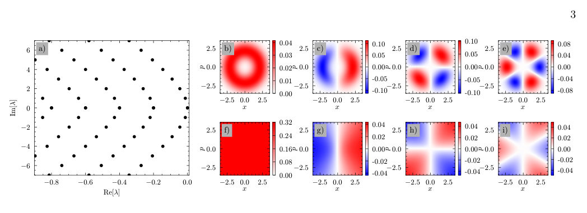
<figcaption class="paper-figure-caption"><b>Fig 1.</b> FIG. 1. (a) Spectrum of the Liouvillian of the laser, showing different parabolic branches of eigenvalues approaching Re[λ] = 0, which characterize the limit cycle. (b-e) Real part of the Husimi function of the least damped right eigenmatrices of the Liouvillian, ν ∈[0, 3]. (f-i) Corresponding left eigenmatrices. Results obtained using A = B = ω = 1, C = 0.2.</figcaption>
</figure>
<figure class="paper-figure-card">
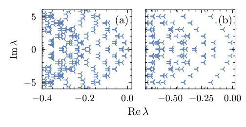
<figcaption class="paper-figure-caption"><b>Fig 2.</b> FIG. 2. Spectrum of the Liouvillian for two lasers with de- tuning δω = 0.1, with no coupling (a), and with dissipative coupling g = 0.2. Results obtained using A = B = ω = 1, C = 0.2.</figcaption>
</figure>
<figure class="paper-figure-card">

<figcaption class="paper-figure-caption"><b>Fig 3.</b> FIG. 3. Phase-space distributions of the Liouvillian eigen- matrices for two lasers, given by the Q-functions in the basis of collective modes (see text), Q(β1 = x + iy, β2 = z). The z-axis is vertical and all axes span [−4, 4]. (a,b) Isosurfaces of the right eigenmatrix for λ = 0, R00, for uncoupled desyn- chronized lasers (a), and coupled synchronized lasers (b). All isosurfaces plotted at 2 max(Q)/3. (c) Magnitude isosurface for the right eigenmatrix of the slowest ν = 1 mode, R10, for synchronized lasers, colored by arg Q. (d) arg Q for the cor- responding left eigenmatrix, L10, on planes in phase-space. ϕ = 0 in (a) and 0.50 in (b,c,d).</figcaption>
</figure>
<figure class="paper-figure-card">
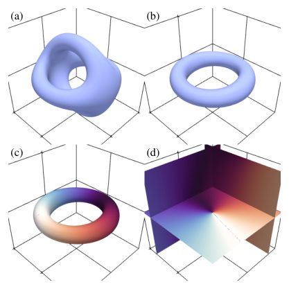
<figcaption class="paper-figure-caption"><b>Fig 4.</b> Fig. 3 shows the Husimi functions, Q(β1, β2) = ⟨β1, β2|(L, R)ν0|β1, β2⟩/π2, for the eigenmatrices cor- responding to some eigenvalues in Fig. 2. The collective U(1) symmetry results in Q(β1, β2) =</figcaption>
</figure>
<figure class="paper-figure-card">
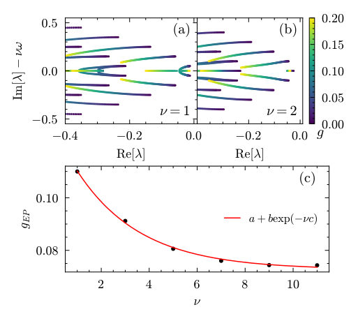
<figcaption class="paper-figure-caption"><b>Fig 5.</b> FIG. 4. (a-b) Evolution of the spectrum of Liouvillian blocks ν = 1, 2 with different dissipative coupling strength g. ν = 1 displays an exceptional point, absent in ν = 2. Using param- eters A = B = 1, C = 0.2, δω = 0.1. (c) Coupling at which the EP of the two leading eigenvalues occurs for different odd harmonics ν, displaying an exponential dependence.</figcaption>
</figure>
</div>

<p><strong>Summary.</strong> This theoretical paper analyzes quantum synchronization in coupled systems like lasers by examining the Liouvillian spectrum. It demonstrates that the transition between desynchronized and synchronized states is governed by exceptional points within the slow modes of the Liouvillian. The findings provide a quantum signature for these transitions observable even in the few-particle regime.</p>
<p><strong>Why it may be interesting.</strong> This work directly addresses open quantum systems dynamics, using the Liouvillian formalism to map classical nonlinear phenomena (like synchronization) onto quantum spectral singularities (Exceptional Points), which is highly relevant for quantum optics and AMO physics.</p>
<details>
<summary>Detailed structure</summary>
<p><strong>Main problem.</strong> The paper investigates the quantum analog of synchronization transitions occurring in coupled self-sustained oscillators, focusing on how these transitions are controlled by singularities in the quantum Liouvillian.</p>
<p><strong>Main result.</strong> The synchronization transition is shown to be controlled by cascades of exceptional points in the slow modes of the Liouvillian spectrum, which are protected by a generalized PT symmetry.</p>
<p><strong>Method.</strong> The analysis involves calculating the spectrum and eigenmatrices of the Liouvillian superoperator, comparing results to semiclassical approximations, and analyzing the spectral flow between different steady-state regimes.</p>
<p><strong>Model / system.</strong> The system models coupled lasers or polariton condensates, whose dynamics are governed by a Lindblad form Liouvillian superoperator. The analysis utilizes concepts like limit cycles and the $U(1)$ symmetry inherent in the system.</p>
<p><strong>Key observables.</strong> The Liouvillian spectrum (eigenvalues $\lambda$), the slow modes of the spectrum, and correlation functions like $g^{(1)}(	au)$ for single and coupled lasers.</p>
<p><strong>Important parameters / regimes.</strong> Coupling strength, detuning ($\delta\omega$), and the coherence order ($n$) of the correlations.</p>
<p><strong>Assumptions / limitations.</strong> The analysis relies on the Liouvillian formalism and involves approximations for the inverse saturation operator in some derivations.</p>
<p><strong>Figures summary.</strong> Figures illustrate the Liouvillian spectrum, showing parabolic branches approaching zero decay rates near the limit cycle, and display the Husimi function for various eigenmatrices.</p>
<p><strong>Paper structure.</strong> The paper progresses by establishing the Liouvillian framework for coupled oscillators, analyzing the spectral properties related to the classical limit cycle, and then detailing how the synchronization transition manifests as exceptional point cascades in the quantum spectrum.</p>
</details>
<details>
<summary>Abstract</summary>
<p>The coupling between self-sustained oscillators, such as lasers or polariton condensates, leads to different steady-states in different regimes. Weak coupling allows the oscillators to behave independently, with different frequencies and uncorrelated phases, while stronger coupling can produce synchronization. In classical or semiclassical theories transitions between these steady-states correspond to changes in the topology of the phase space attractors and occur at generalized exceptional points. We investigate the corresponding changes in a quantum theory of coupled lasers or condensates. We show how the different steady-state regimes of the classical limit give rise to distinct forms for the spectra and eigenmatrices of the slow modes of the Liouvillian. By following the spectral flow between the different regimes we show that the synchronization transition is controlled by cascades of exceptional points in these slow modes, protected by a generalized PT symmetry. Our results show how singularities of the quantum Liouvillian control the different dynamical regimes, and give rise to experimental signatures of the synchronization transition which remain well-defined in the few-particle regime dominated by quantum effects.</p>
</details>
<p><sub><a href="#top">↑ back to top</a></sub></p>

<p><a id="paper-2609.17979"></a></p>
<h3 id="qurrium-a-python-package-for-randomized-measurement-based-estimation-of-quantum-state-properties"><a href="http://arxiv.org/abs/2609.17979v1">Qurrium: A Python package for randomized measurement-based estimation of quantum state properties</a></h3>
<p><strong>Authors:</strong> Huai-Chun Chang, Teik-Hui Lee, Arthur Strauss, Yu-Cheng Lin, Hsiu-Chuan Hsu<br>
<strong>Type:</strong> both · <strong>Category:</strong> quantum information and computing · <strong>PDF:</strong> <a href="https://arxiv.org/pdf/2609.17979v1">https://arxiv.org/pdf/2609.17979v1</a><br>
<strong>Analysis basis:</strong> full PDF text, analyzed in chunks
<strong>Topic relevance:</strong> 🔥 <code>quantum measurements</code> <strong>4/5</strong> · <code>QC/QI experiment</code> <strong>3/5</strong> · <code>analog quantum simulation</code> <strong>3/5</strong> · <code>methods for driven-dissipative</code> <strong>2/5</strong> · <code>Full counting statistics</code> <strong>1/5</strong> · <code>driven-dissipative phase transition</code> <strong>1/5</strong> · <code>quantum optics experiment</code> <strong>1/5</strong></p>
<div class="figure-strip-hint">↔ Scroll figures horizontally</div>
<div class="paper-figures-scroll">
<figure class="paper-figure-card">
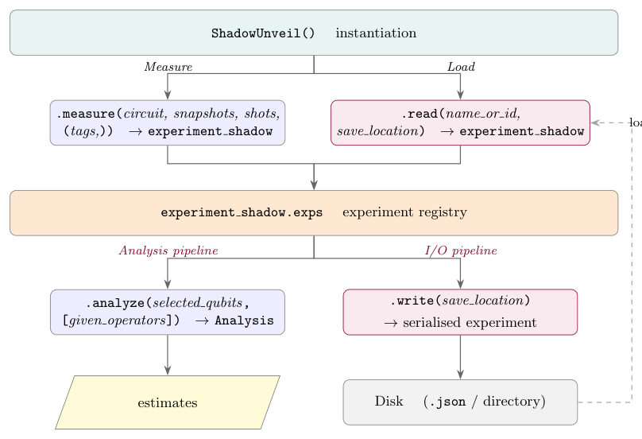
<figcaption class="paper-figure-caption"><b>Fig 1.</b> Figure 1: The end-to-end workflow for the classical shadow protocol in Qurrium. The figure was generated using the TikZ package in LATEX, written with the assistance of Claude Sonnet 4.6 (Anthropic).</figcaption>
</figure>
<figure class="paper-figure-card">
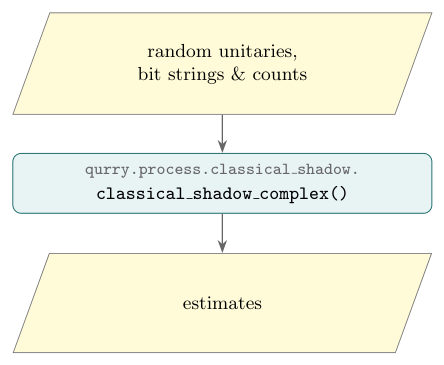
<figcaption class="paper-figure-caption"><b>Fig 2.</b> Figure 2: The stadnalone estimation workflow. The figure was generated using the TikZ package in LATEX, written with the assistance of Claude Sonnet 4.6 (An- thropic).</figcaption>
</figure>
<figure class="paper-figure-card">
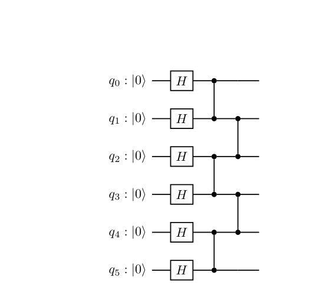
<figcaption class="paper-figure-caption"><b>Fig 3.</b> Figure 3: Quantum circuit for preparing a six-qubit one- dimensional cluster state with OBC.</figcaption>
</figure>
<figure class="paper-figure-card">
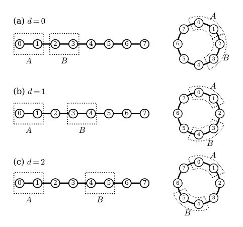
<figcaption class="paper-figure-caption"><b>Fig 4.</b> Figure 6: Illustration of the distance d between two sub- systems A and B, enclosed by dotted lines, for an 8- qubit cluster state with OBC (left) and PBC (right). (a) d = 0, (b) d = 1, and (c) d = 2.</figcaption>
</figure>
<figure class="paper-figure-card">
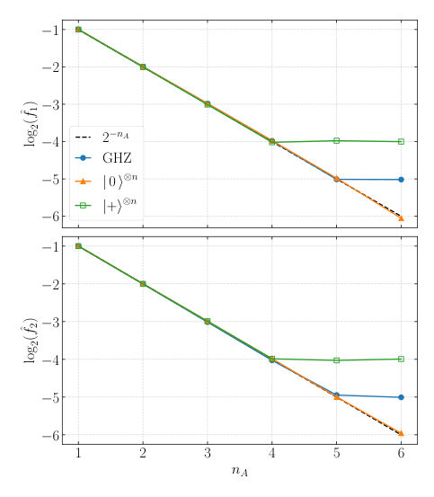
<figcaption class="paper-figure-caption"><b>Fig 5.</b> Figure 5: The overlap between the cluster state and GHZ, all-zero and all-plus states of subsystem size nA, estimated using Eq. (8) (top) and Eq. (9) (bottom). The full system size is n = 6 for all states.</figcaption>
</figure>
</div>

<p><strong>Summary.</strong> This paper presents Qurrium, a Python package built on Qiskit, designed to estimate quantum state properties efficiently using randomized measurement protocols like the classical shadow protocol. It offers two workflows—one for simulation and one for analyzing raw hardware data—allowing researchers to characterize complex states like cluster states and measure observables on real quantum hardware.</p>
<p><strong>Why it may be interesting.</strong> For AMO physicists studying open quantum systems, this provides a crucial, hardware-agnostic tool to characterize complex quantum states (like those generated by cavity QED or trapped ions) using measurement data, bypassing the need for full tomography.</p>
<details>
<summary>Detailed structure</summary>
<p><strong>Main problem.</strong> The paper addresses the essential need to estimate quantum state properties (like purity, entropy, and overlaps) without performing full quantum state tomography.</p>
<p><strong>Main result.</strong> It introduces Qurrium, a Python package built on Qiskit, that implements randomized measurement protocols, specifically the classical shadow protocol, for efficient state characterization.</p>
<p><strong>Method.</strong> The methodology centers on using randomized measurements (classical shadow protocol) to estimate expectation values and state properties, demonstrated through both end-to-end simulation workflows and standalone analysis of hardware-collected data.</p>
<p><strong>Model / system.</strong> The package is tested on theoretical models like the cluster state and Ising time-evolved states, and validated using measurements from a superconducting quantum processor.</p>
<p><strong>Key observables.</strong> Purity ($  ext{Tr}(
ho^2)$), second-order Rényi entropy ($S^{(2)}(
ho)$), expectation values of Pauli observables ($\langle O 
angle$), and state overlaps ($ ext{Tr}(
ho
ho')$).</p>
<p><strong>Important parameters / regimes.</strong> The analysis depends on the structure of the quantum state (e.g., cluster state stabilizers) and the separation distance ($d$) between subsystems.</p>
<p><strong>Assumptions / limitations.</strong> The standalone workflow assumes measurement outcomes and random unitaries are recorded in the specific Qurrium data format; the efficiency gains are implementation-level and do not change statistical complexity.</p>
<p><strong>Figures summary.</strong> Figures illustrate the end-to-end and standalone workflows. Specific results show the overlap between the cluster state and reference states, and the decay of mutual information $I^{(2)}(A:B)$ with separation distance $d$.</p>
<p><strong>Paper structure.</strong> The paper reviews the classical shadow protocol, details the two distinct workflows within Qurrium (end-to-end and standalone), and then demonstrates usage with concrete examples like the cluster state and Ising dynamics.</p>
</details>
<details>
<summary>Abstract</summary>
<p>Estimating quantum state properties is essential across a wide range of applications, from studying quantum many-body physics to benchmarking quantum hardware. We present Qurrium, a Python package built on Qiskit that implements randomized measurement protocols for estimating purity, second-order Rényi entropy, expectation values of Pauli observables, and state overlap. In this paper, we focus on the classical shadow protocol and demonstrate two workflows in Qurrium. One is the end-to-end workflow that integrates quantum circuit preparation, simulation, measurement, and analysis. The other is the standalone estimation workflow that accepts pre-collected measurement data from any hardware platform in Qurrium's data format. We demonstrate both workflows through examples of a cluster state and an Ising time-evolved state. Furthermore, we report results obtained from a superconducting quantum processor developed by Academia Sinica and analyzed using the standalone estimation workflow. Qurrium is built on Qiskit, the dominant framework in quantum computing software, making it directly accessible to the large community of researchers already working with Qiskit. The source code is openly available at https://github.com/qurrium/qurrium and the example code is provided at https://github.com/qurrium/classical-shadow-examples.</p>
</details>
<p><sub><a href="#top">↑ back to top</a></sub></p>

<p><a id="paper-2609.18208"></a></p>
<h3 id="logarithmic-singularity-in-a-dynamical-quantum-phase-transition-for-free-fermions"><a href="http://arxiv.org/abs/2609.18208v1">Logarithmic singularity in a dynamical quantum phase transition for free fermions</a></h3>
<p><strong>Authors:</strong> Yasser Bezzaz, Dimitri M. Gangardt, Pavel L. Krapivsky, Jean-Marc Luck, Kirone Mallick, Sylvain Prolhac<br>
<strong>Type:</strong> theory · <strong>Category:</strong> statistical mechanics · <strong>PDF:</strong> <a href="https://arxiv.org/pdf/2609.18208v1">https://arxiv.org/pdf/2609.18208v1</a><br>
<strong>Analysis basis:</strong> full PDF text, analyzed in chunks
<strong>Topic relevance:</strong> 🔥 <code>non-equilibrium universality</code> <strong>4/5</strong> · <code>Keldysh / 2PI / non-Gaussian methods</code> <strong>3/5</strong> · <code>driven-dissipative phase transition</code> <strong>3/5</strong> · <code>methods for driven-dissipative</code> <strong>2/5</strong> · <code>analog quantum simulation</code> <strong>1/5</strong> · <code>scars &amp; prethermalization</code> <strong>1/5</strong></p>
<div class="figure-strip-hint">↔ Scroll figures horizontally</div>
<div class="paper-figures-scroll">
<figure class="paper-figure-card">
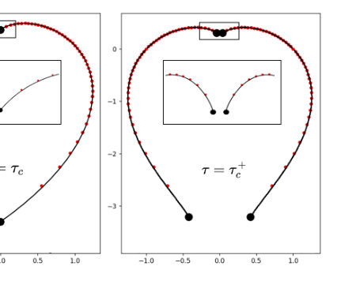
<figcaption class="paper-figure-caption"><b>Fig 1.</b> Figure 2: Topological change of the dominant instanton configuration across the critical rescaled time τ = τc in the complex plane z = eiq. Red dots show the discrete saddle points from solving numerically (21) for N = 90. The curves in black represent the density support of the saddle points in the continuous limit by solving (29).</figcaption>
</figure>
<figure class="paper-figure-card">
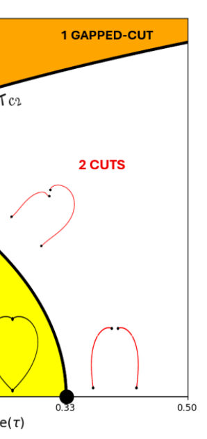
<figcaption class="paper-figure-caption"><b>Fig 2.</b> Figure 3: Phase diagram of the dominant instanton configuration for AN(τ) in the complex plane of τ. Typical shapes of the charge support are shown in each region. The point of merger of the two critical lines for τ = i/2 corresponds to the third- order Gross-Witten-Wadia transition.</figcaption>
</figure>
<figure class="paper-figure-card">
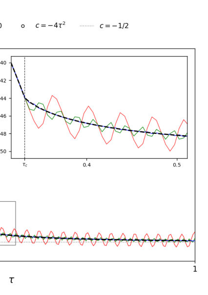
<figcaption class="paper-figure-caption"><b>Fig 3.</b> Figure 4: Order parameter c(τ). The colored curves are extracted from the finite- N Loschmidt amplitude computed through the Toeplitz determinant representa- tion (15). The black dashed curve is the large-N solution obtained from Eq. (45). The open circles indicate the exact short-time result c(τ) = −4τ2, while the grey dotted line denotes the large-time asymptote c(∞) = −1/2. The inset highlights the convergence of the finite-N results near the critical point.</figcaption>
</figure>
<figure class="paper-figure-card">
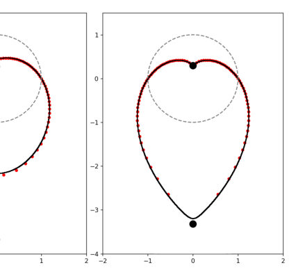
<figcaption class="paper-figure-caption"><b>Fig 4.</b> Figure 5: Evolution of the dominant instanton configuration in the short-time regime in the complex plane z = eiq. From left to right: τ = 0.25, τ = 0.29, and τ ≃τc = 0.331, with N = 40, N = 90, and N = 90, respectively. Red dots show the discrete saddle points obtained by solving numerically (21), while the black curve represents the continuum support γ determined exactly in (53). Black dots indicate the zeros of y(z), and the grey dotted curve is the unit circle. As τ approaches τc, the zeros move toward the support, which continuously deforms into the unbroken- heart configuration at the transition.</figcaption>
</figure>
<figure class="paper-figure-card">
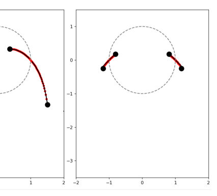
<figcaption class="paper-figure-caption"><b>Fig 5.</b> Figure 6: Evolution of the dominant instanton configuration in the long-time regime. From left to right: τ = 0.5, τ = 1, and τ = 10, with N = 90. Red dots show the discrete saddle points obtained by solving numerically (21), while the black curves represent the continuum support γ determined from (29). Black dots indicate the branch points of y(z) and the endpoints of the support. The grey dotted curve is the unit circle. In this regime, the support consists of two symmetric disconnected cuts forming the broken-heart configuration. As τ increases, the two cuts continuously approach the steepest-descent contours of the external potential.</figcaption>
</figure>
</div>

<p><strong>Summary.</strong> This work analyzes the Loschmidt echo for free fermions undergoing a dynamical quantum phase transition (DQPT). By mapping the problem to instanton calculations, the authors show that the transition manifests as a logarithmic singularity in the dynamical free energy. This provides a deep connection between quantum quench dynamics, topology, and large-deviation theory.</p>
<p><strong>Why it may be interesting.</strong> The connection between non-equilibrium quantum dynamics (Loschmidt echo) and topological phase transitions, using tools from random matrix theory and large deviations, is highly relevant to understanding quantum thermalization and non-equilibrium critical phenomena.</p>
<details>
<summary>Detailed structure</summary>
<p><strong>Main problem.</strong> The paper investigates the Loschmidt echo in a system undergoing a dynamical quantum phase transition (DQPT).</p>
<p><strong>Main result.</strong> The dynamical free energy develops a logarithmic singularity at the DQPT, which is understood as a topological change in the dominant instanton configuration.</p>
<p><strong>Method.</strong> The analysis uses large-deviation theory, mapping the problem to a Coulomb gas model and employing instanton calculations in the complex time plane.</p>
<p><strong>Model / system.</strong> The system consists of N non-interacting spinless lattice fermions on a 1D lattice, initialized in a double-domain-wall state. The dynamics are governed by a tight-binding Hamiltonian.</p>
<p><strong>Key observables.</strong> Loschmidt echo, dynamical free energy, and the instanton configuration.</p>
<p><strong>Important parameters / regimes.</strong> Large N limit, large time limit, and the rescaled time $\tau = t/N$.</p>
<p><strong>Assumptions / limitations.</strong> The analysis relies on the large-N limit and the characterization of the echo by the dominant complex instanton configuration.</p>
<p><strong>Figures summary.</strong> Figures illustrate the initial double-domain-wall configuration and the topological change of the dominant instanton configuration across the critical point.</p>
<p><strong>Paper structure.</strong> The paper reviews known results, maps the problem to the Coulomb gas, analyzes the real-time DQPT, and extends the analysis to complex time to study post-selection effects.</p>
</details>
<details>
<summary>Abstract</summary>
<p>We study the Loschmidt echo in a system of N non-interacting spinless lattice fermions released from a double-domain-wall initial state. In the large-N limit, the return probability is characterized by a large-deviation rate function known as the dynamical free energy. The Loschmidt echo is dominated by a complex instanton configuration, and the dynamical free energy develops a logarithmic singularity at the dynamical quantum phase transition. We obtain analytical results in the short-time and long-time regimes and support them with numerical computations. We show that the transition can be understood as a topological change of the dominant instanton configuration, analogous to the emergence of a cut in random matrix theory. We further show that post-selection can drive the system through two successive DQPTs, associated with successive topological changes of the dominant instanton configuration in complex time.</p>
</details>
<p><sub><a href="#top">↑ back to top</a></sub></p>

<p><a id="paper-2609.18757"></a></p>
<h3 id="query-optimal-and-gate-efficient-lindbladian-simulation"><a href="http://arxiv.org/abs/2609.18757v1">Query-Optimal and Gate-Efficient Lindbladian Simulation</a></h3>
<p><strong>Authors:</strong> Boyang Chen, Minbo Gao, Xinzhao Wang, Shuo Zhou<br>
<strong>Type:</strong> theory · <strong>Category:</strong> quantum information and computing · <strong>PDF:</strong> <a href="https://arxiv.org/pdf/2609.18757v1">https://arxiv.org/pdf/2609.18757v1</a><br>
<strong>Analysis basis:</strong> full PDF text, analyzed in chunks
<strong>Topic relevance:</strong> 🔥 <code>methods for driven-dissipative</code> <strong>4/5</strong> · <code>correlated / nonlocal dissipation</code> <strong>3/5</strong> · <code>driven-dissipative phase transition</code> <strong>3/5</strong> · <code>Keldysh / 2PI / non-Gaussian methods</code> <strong>1/5</strong> · <code>analog quantum simulation</code> <strong>1/5</strong> · <code>non-equilibrium universality</code> <strong>1/5</strong> · <code>quantum measurements</code> <strong>1/5</strong></p>
<div class="figure-strip-hint">↔ Scroll figures horizontally</div>
<div class="paper-figures-scroll">
<figure class="paper-figure-card">
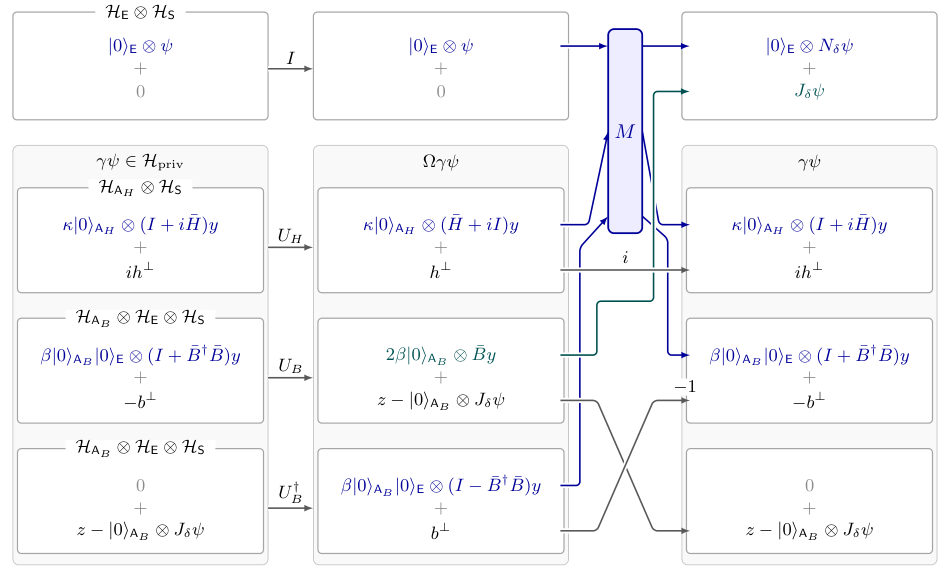
<figcaption class="paper-figure-caption"><b>Fig 1.</b> Figure 1: One query followed by G implements Wδ and restores γψ. Here h, z, b are the three components of the private input to G. Blue connections show M ⊗IS acting as in (51); the other connections implement the projections, swaps, and phases in the explicit action of G in (53).</figcaption>
</figure>
<figure class="paper-figure-card">
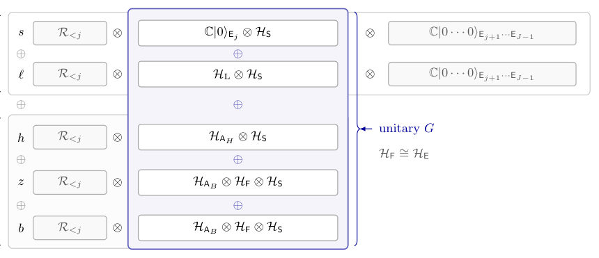
<figcaption class="paper-figure-caption"><b>Fig 2.</b> Figure 2: The five summands of Hj+1 ⊕Kj. The highlighted column is the space on which the unitary G constructed in Lemma 3.1 acts; its action is shown in Figure 1. The unitary Gj applies G to this column and leaves R&lt;j unchanged. The first row is Hj. Fixed public suffixes are displayed after regrouping tensor factors; F denotes the private copy of E.</figcaption>
</figure>
<figure class="paper-figure-card">

<figcaption class="paper-figure-caption"><b>Fig 3.</b> Figure 3: Partition of [5, 16), with interval lengths shown inside the bars. Repeated endpoints give empty intervals.</figcaption>
</figure>
<figure class="paper-figure-card">
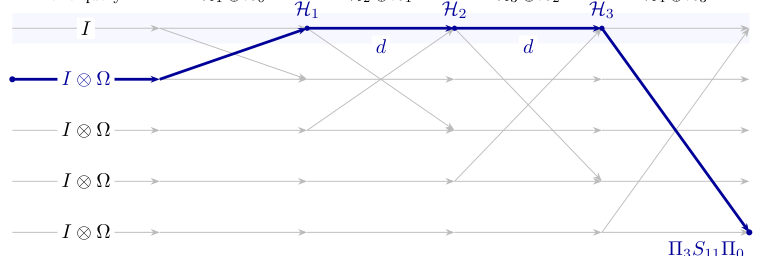
<figcaption class="paper-figure-caption"><b>Fig 4.</b> Figure 4: The sequential product for J = 4, with rows representing direct-sum subspaces. The highlighted arrows show the only sequence of subspaces contributing to Π3S11Π0: it passes through H1 ⊆H2 ⊆H3, where G1 and G2 each act by multiplication by d. The updates Gr+1, . . . , GJ−1 act as the identity on Kr.</figcaption>
</figure>
<figure class="paper-figure-card">
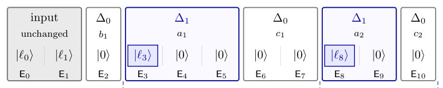
<figcaption class="paper-figure-caption"><b>Fig 5.</b> Figure 5: Output Kraus labels for one summand of (183). The horizontal widths show the initial index j0 and the subsequent increments. The two ∆1 factors create nonzero labels at s1 = 3 and s2 = 8. The increments c1 = b2 and c2 = b3 are fixed by b; (187) then determines a.</figcaption>
</figure>
</div>

<p><strong>Summary.</strong> This paper presents a quantum algorithm to simulate Lindbladian evolution with optimal query and gate complexity. It achieves a complexity matching the lower bound for Hamiltonian simulation by employing a sophisticated one-query transducer construction. This breakthrough provides a highly efficient tool for simulating open quantum systems in quantum computation.</p>
<p><strong>Why it may be interesting.</strong> This work directly addresses the computational efficiency of simulating open quantum systems, which is crucial for modeling realistic physical processes like decoherence in quantum computing hardware.</p>
<details>
<summary>Detailed structure</summary>
<p><strong>Main problem.</strong> The primary goal is to determine the optimal query complexity for simulating quantum evolution governed by a Lindbladian master equation.</p>
<p><strong>Main result.</strong> The authors achieve a query complexity matching the lower bound for Hamiltonian simulation, $O(	au + rac{\log(1/\epsilon)}{\log(e + \log(1/\epsilon)/	au)})$, for time-independent and time-dependent Lindbladians.</p>
<p><strong>Method.</strong> The simulation is implemented using a one-query transducer construction that approximates the evolution channel as a product of short-time steps, leveraging compressed Kraus-label representations and rotation factorization.</p>
<p><strong>Model / system.</strong> The system is described by Lindbladian dynamics, $\mathcal{L}(
ho) = -i[H, 
ho] + 	ext{Tr}_E(B
ho B^\dagger) - rac{1}{2}\{B^\dagger B, 
ho\}$, which models open-system evolution. The simulation approximates $e^{t\mathcal{L}}(
ho)$ in the diamond norm.</p>
<p><strong>Key observables.</strong> Diamond-norm error ($\epsilon$), Query Complexity, Gate Complexity.</p>
<p><strong>Important parameters / regimes.</strong> Time $t$, time normalization $   au = (\alpha_H + \alpha_B^2)t$, and the approximation parameter $q$ (related to the number of factors).</p>
<p><strong>Assumptions / limitations.</strong> The analysis assumes access to specific block and projected unitary encodings for the Hamiltonian $H$ and jump operators $B$.</p>
<p><strong>Figures summary.</strong> Figure 4 illustrates the sequential product structure for $J=4$ steps, showing the path through subspaces. Figure 5 shows the output Kraus labels for one summand of the expansion, detailing index determination.</p>
<p><strong>Paper structure.</strong> The paper develops the simulation by first establishing the required isometry $W_\delta$ using a transducer formalism. It then constructs the product isometry $W_J$ via a reuse construction, bounding the error using polynomial approximations $Q_q(\zeta)$, and finally deriving the optimal query and gate complexity bounds.</p>
</details>
<details>
<summary>Abstract</summary>
<p>We give a quantum algorithm for Lindbladian simulation given a block encoding of the Hamiltonian $H$ and a projected unitary encoding of the stacked jump operator $B=\sum_{k=1}^m \lvert k\rangle\otimes L_k$, with normalization factors $α_H$ and $α_B$, respectively. For evolution time $t$, set $τ=(α_H+α_B^2)t$. The algorithm approximates the evolution channel to diamond-norm error $\varepsilon$ using $O\!\left(τ+\frac{\log(1/\varepsilon)}{\log\!\left(e+\log(1/\varepsilon)/τ\right)}\right)$ oracle queries, matching the query lower bound for Hamiltonian simulation. The number of additional one- and two-qubit gates is linear in the query complexity up to polylogarithmic factors. The query- and gate-complexity bounds extend to Lipschitz-continuous time-dependent Lindbladians under coherent time-indexed oracle access. Our construction uses a one-query transducer that implements a product of rational approximations to short-time evolution when supplied with a catalyst. We bound the error from omitting the catalyst by exploiting orthogonality between different sequences of Kraus labels. The gate implementation combines a compressed Kraus-label representation, which stores only the positions and values of the nonzero labels, with the rotation factorization of Chen et al.</p>
</details>
<p><sub><a href="#top">↑ back to top</a></sub></p>

<p><a id="paper-2609.18447"></a></p>
<h3 id="a-programmable-rydberg-quantum-bus-for-nonlocal-connectivity"><a href="http://arxiv.org/abs/2609.18447v1">A Programmable Rydberg Quantum Bus for Nonlocal Connectivity</a></h3>
<p><strong>Authors:</strong> X. Jin, F. Yang, Weibin Li, X. Q. Shao<br>
<strong>Type:</strong> theory · <strong>Category:</strong> other · <strong>PDF:</strong> <a href="https://arxiv.org/pdf/2609.18447v1">https://arxiv.org/pdf/2609.18447v1</a><br>
<strong>Analysis basis:</strong> full PDF text, analyzed in chunks
<strong>Topic relevance:</strong> 🔥 <code>Rydberg arrays</code> <strong>4/5</strong> · 🔥 <code>analog quantum simulation</code> <strong>4/5</strong> · <code>Keldysh / 2PI / non-Gaussian methods</code> <strong>2/5</strong> · <code>methods for driven-dissipative</code> <strong>2/5</strong> · <code>Tavis-Cummings &amp; cavity-many-emitter</code> <strong>1/5</strong></p>
<div class="figure-strip-hint">↔ Scroll figures horizontally</div>
<div class="paper-figures-scroll">
<figure class="paper-figure-card">

<figcaption class="paper-figure-caption"><b>Fig 1.</b> FIG. 1. Schematic of the ideal model. The system consists of an atomic chain of N sites, where N is an odd integer. Each atom is labeled sequentially. Three data units, labeled A, B, and C and depicted as red spheres, are coupled respectively to the three odd- numbered sites 1, m, and N of the chain. Each atom is modeled as a two-level system, with two Rydberg states denoted by |↑⟩and |↓⟩. Within the chain, the interaction of atoms is nearest-neighbor dipole- exchange interaction with strength V . Sites 1 and N, highlighted in orange, are subject to a detuning ∆. Each of the data units couples to its nearest chain site with strength J.</figcaption>
</figure>
<figure class="paper-figure-card">

<figcaption class="paper-figure-caption"><b>Fig 2.</b> FIG. 2. (a)-(c) Time evolution of the populations of the data units in a nine-atom chain coupled to three data units. (a) Dynamics in the single-excitation manifold. Blue solid, red solid, and orange dashed lines represent the populations of the excited states of data units A, B, and C, respectively. Initially, only site A is excited to |↑⟩, while all other sites are in |↓⟩. (b) Dynamics in the double-excitation manifold, where blue solid, red solid, and orange dashed lines denote the populations of the double-excitation states. Initially, sites A and B are excited to |↑⟩, while all other sites are in |↓⟩. (c) Dynamics in the triple-excitation manifold, with all data units initially...</figcaption>
</figure>
<figure class="paper-figure-card">

<figcaption class="paper-figure-caption"><b>Fig 3.</b> FIG. 3. Schematic illustration of chiral transport via Floquet engi- neering. (a) A 1D chain consists of five atoms labeled from 1 to 5. Site 1, 3, and 5 are modeled as three-level systems comprising a low- lying state |e⟩and two Rydberg state |↑⟩and |↓⟩, while sites 2 and 4 are two-level Rydberg atoms. Green spheres indicate sites coupled by laser fields with Rabi frequency Ωj, and orange spheres denote sites with a local detuning ∆j. The staggered configurations for H1 and H2 stages are shown. (b) Energy level diagrams of the driven atoms, illustrating the Rabi frequency Ωj and the local detuning ∆j applied to the Rydberg state. (c) The Floquet driving protocol with period T . The system...</figcaption>
</figure>
<figure class="paper-figure-card">

<figcaption class="paper-figure-caption"><b>Fig 4.</b> FIG. 4. The dynamics of chiral transport via Floquet engineering. Panels (a)-(c) are obtained using the ideal Hamiltonian with only nearest- neighbor interactions, while (d)-(f) use the full Hamiltonian that incorporates all long-range interactions. (a) and (d) Two-dimensional heat map of the fidelity as a function of the interval τ and the detuning ∆. The red star marks the global maximum of the fidelity within the scanned parameter range. (b) and (e) Chirality fidelity as a function of τ at the optimal detuning extracted from the heat map. The optimal interval is indicated by the red dashed line. (c) and (f) Time evolution of the population at the best τ. Solid lines represent the evolution...</figcaption>
</figure>
<figure class="paper-figure-card">

<figcaption class="paper-figure-caption"><b>Fig 5.</b> FIG. 5. Schematic of the entanglement generation between mechan- ical oscillators mediated by a Rydberg atom chain. The 1D chain consists of five atoms, each modeled as a simple two-level system with two Rydberg states denoted as |↑⟩and |↓⟩. The interaction is considered as a nearest-neighbor dipole-dipole interaction. The two edge atoms, highlighted in orange, exhibit a detuning ∆. Two me- chanical oscillators, labeled A and C, are coupled to the atoms at the boundaries of the chain, respectively.</figcaption>
</figure>
</div>

<p><strong>Summary.</strong> This paper shows how a chain of Rydberg atoms can act as a programmable quantum bus to overcome the limitations of local connectivity in neutral-atom quantum processors. By analyzing virtual excitations, the authors derive an effective Hamiltonian that mediates controllable, nonlocal interactions. This establishes a scalable route toward reconfigurable quantum network architectures with quasi-all-to-all coupling.</p>
<p><strong>Why it may be interesting.</strong> This work provides a concrete, hardware-level mechanism for engineering long-range, programmable interactions in neutral-atom quantum simulators, directly addressing a major bottleneck in scaling quantum networks.</p>
<details>
<summary>Detailed structure</summary>
<p><strong>Main problem.</strong> The primary challenge is achieving flexible, nonlocal connectivity in quantum processing nodes using neutral atoms, as native Rydberg interactions are too spatially dependent for large-scale systems.</p>
<p><strong>Main result.</strong> The authors demonstrate that a Rydberg atom chain can function as a programmable quantum bus, effectively transforming a local 1D architecture into a quasi-all-to-all interacting network.</p>
<p><strong>Method.</strong> The analysis employs the Green's-function continued-fraction method and Feshbach partitioning to derive an effective Hamiltonian describing the mediated interactions in the dispersive regime.</p>
<p><strong>Model / system.</strong> The system is a 1D chain of Rydberg atoms coupled to external data units. The dynamics are analyzed by deriving an effective Hamiltonian that mediates interactions via virtual excitations in the dispersive regime.</p>
<p><strong>Key observables.</strong> Population dynamics in different excitation manifolds, chiral transport fidelity, and the ability to generate W-states.</p>
<p><strong>Important parameters / regimes.</strong> The mechanism is robust against long-range interactions, atomic position fluctuations, and finite Rydberg-state lifetimes.</p>
<p><strong>Assumptions / limitations.</strong> The analysis initially focuses on the single-excitation subspace, though simulations incorporate full long-range interactions for realism.</p>
<p><strong>Figures summary.</strong> Figures illustrate the schematic of the atomic chain coupling, time evolution of populations in excitation manifolds, and the mechanism for chiral transport using alternating Hamiltonians.</p>
<p><strong>Paper structure.</strong> The paper progresses from defining the connectivity problem to deriving the effective Hamiltonian using Green's functions, demonstrating specific functionalities like chiral transport, and concluding with the realization of scalable W-state generation.</p>
</details>
<details>
<summary>Abstract</summary>
<p>Scalable quantum networks require processing nodes with flexible internal connectivity, yet neutral-atom architectures remain constrained by the strong spatial dependence of native Rydberg interactions. Here we show that a Rydberg atom chain can act as a coherent quantum bus, converting a locally connected one-dimensional architecture into an effectively nonlocal interaction network. Virtual excitations in the dispersive regime mediate controllable interactions between spatially separated data units, which we derive analytically using a Green's-function continued-fraction method. The resulting mechanism is not restricted to single-excitation dynamics and supports several distinct functionalities, including Floquet-engineered chiral transport, remote entanglement of mechanical oscillators, and destructive interference for selectively suppressing unwanted dipole exchange. Simulations incorporating full long-range Rydberg interactions, atomic position fluctuations, and finite Rydberg-state lifetimes show that the mediated dynamics remain robust under experimentally relevant conditions. These results establish Rydberg chains as programmable coherent mediators for extending the internal connectivity of neutral-atom quantum nodes toward quasi-all-to-all coupling, providing a hardware-level route toward scalable and reconfigurable quantum-network architectures.</p>
</details>
<p><sub><a href="#top">↑ back to top</a></sub></p>

<p><a id="paper-2609.19092"></a></p>
<h3 id="continuous-variable-distributed-quantum-sensing-in-integrated-photonics"><a href="http://arxiv.org/abs/2609.19092v1">Continuous variable distributed quantum sensing in integrated photonics</a></h3>
<p><strong>Authors:</strong> Bethany Puzio, Oliver M. Green, Joel F. Tasker, Jonathan Frazer, Tamzin Ellis, Benjamin D. J. Sayers, Rachel N. Clark, Alex S. Clark, Giacomo Ferranti, Jonathan C. F. Matthews<br>
<strong>Type:</strong> experiment · <strong>Category:</strong> quantum information and computing · <strong>PDF:</strong> <a href="https://arxiv.org/pdf/2609.19092v1">https://arxiv.org/pdf/2609.19092v1</a><br>
<strong>Analysis basis:</strong> full PDF text, analyzed in chunks
<strong>Topic relevance:</strong> 🔥 <code>quantum optics experiment</code> <strong>4/5</strong> · <code>QC/QI experiment</code> <strong>3/5</strong> · <code>quantum measurements</code> <strong>3/5</strong> · <code>interference shaping light</code> <strong>2/5</strong> · <code>analog quantum simulation</code> <strong>1/5</strong></p>
<div class="figure-strip-hint">↔ Scroll figures horizontally</div>
<div class="paper-figures-scroll">
<figure class="paper-figure-card">

<figcaption class="paper-figure-caption"><b>Fig 1.</b> FIG. 1: The photonic chip (A) Layout of the silicon-on-insulator (SOI) photonic integrated circuit (PIC). The single mode squeezed vacuum and local oscillator (LO) are coupled onto the PIC via grating couplers. Entanglement is generated across four spatial modes by mixing the squeezed light with vacuum across three cascaded Mach-Zehnder interferometers (MZIs). The LO is also split across four spatial modes via MZIs, and then routed to homodyne detectors HD1-4, to detect each mode of the entangled state. Thermo-optic phase modulators (TOPMs) θ1−4 are used to balance HD1-4 respectively, while also acting as the phase parameters to be sensed. (B) Optical microscope image of the PIC and...</figcaption>
</figure>
<figure class="paper-figure-card">

<figcaption class="paper-figure-caption"><b>Fig 2.</b> FIG. 2: Multi-mode squeezing measurements with integrated homodyne detectors (A) Experiment schematic. LO and squeezed vacuum couple onto PIC via VGA. Each homodyne detector output is wirebonded to a TIA mounted on a PCB. All TIA outputs are measured on the oscilloscope (scope). HD2 output is split into three paths using power splitters (PS) and an RF amplifier (RF amp) to derive the locking signal whilst measuring output simultaneously on the ESA and the oscilloscope. See Supplementary Materials for noise locking electronics details. (B) Squeezed vacuum noise measured on an oscilloscope with the corresponding phase space representation for illustration of the behaviour at specific points...</figcaption>
</figure>
<figure class="paper-figure-card">

<figcaption class="paper-figure-caption"><b>Fig 3.</b> FIG. 3: Temporal mode definition and multi-mode state tomography (A) Schematic illustrating the process of converting raw oscilloscope squeezing data, ˆqdet sq,j(t), into well-defined quadratures, ˆqsq,j,k, where j and k define the spatial and temporal mode respectively. (B) Our choice of temporal mode function in time, gk(t), a sine wave modulated Gaussian with total width τ = 2.25 µs, full width half maximum s = 1.8 µs and modulation frequency, f = 6.296 MHz. (C) Temporal mode profile in frequency as a Gaussian centered on f. Crucially, the DC offset at 0 Hz is not completely suppressed. (D) Resulting four-mode covariance matrix and errors from 8 repeated tomography measurements of the...</figcaption>
</figure>
<figure class="paper-figure-card">

<figcaption class="paper-figure-caption"><b>Fig 4.</b> FIG. 4: Linear phase function sensing results (A) Results of four different measurements of φavg with precisions relative to the shot noise (SN) labelled for separable and entangled sensing protocols. (B) Results from using the same data in (A) to sense the arbitrarily weighted linear function, Φ = PM j=1 wjφj, with the values for wj given in (C).</figcaption>
</figure>
</div>

<p><strong>Summary.</strong> This paper demonstrates entanglement-enhanced distributed quantum sensing using continuous variable light implemented on a scalable Silicon-on-Insulator photonic chip. By generating and measuring four-mode entanglement, the authors achieved a significantly higher precision in phase estimation compared to classical methods. This work advances the field by proving the feasibility of quantum sensing in compact, integrated optical hardware.</p>
<p><strong>Why it may be interesting.</strong> This work provides a concrete, scalable, and integrated platform demonstration of quantum metrology principles, directly advancing the hardware realization of quantum sensing protocols.</p>
<details>
<summary>Detailed structure</summary>
<p><strong>Main problem.</strong> The paper aims to demonstrate and quantify the advantage of using continuous variable (CV) distributed quantum sensing with entangled states over classical (separable) states for measuring phase shifts.</p>
<p><strong>Main result.</strong> The entangled sensing protocol achieved a precision of 0.199(16) dB below the shot noise limit, significantly outperforming the separable state limit of 0.041(18) dB.</p>
<p><strong>Method.</strong> The sensing relies on measuring the DC offset in integrated homodyne detectors after generating a four-mode entangled state on a photonic chip, allowing for the estimation of the average phase shift.</p>
<p><strong>Model / system.</strong> The experiment uses a Silicon-on-Insulator (SOI) Photonic Integrated Circuit (PIC) containing a Beam Splitter Network (BSN) and four integrated homodyne detectors. Entanglement is generated from an off-chip squeezed vacuum source.</p>
<p><strong>Key observables.</strong> Mean subtracted photocurrent ($\langle\delta\hat{i}_j
angle$), average phase shift ($\phi_{avg}$), and the measured phase variance ($\Delta^2\varphi_{avg}$).</p>
<p><strong>Important parameters / regimes.</strong> Number of modes ($M=4$), total system efficiency ($\eta = 0.203(5)$), and the comparison between entangled and separable state precision limits.</p>
<p><strong>Assumptions / limitations.</strong> The primary limitation noted is the loss introduced by coupling the squeezed light on or off the chip, which limits the achievable performance.</p>
<p><strong>Figures summary.</strong> Figures illustrate the PIC schematic, the process of converting raw time-domain data into well-defined quadratures, and comparative plots showing the measured phase precision advantage for both entangled and separable states.</p>
<p><strong>Paper structure.</strong> The paper details the physical setup (SOI PIC, BSN, detectors), the theoretical framework for precision calculation ($\sigma_e$ vs $\sigma_s$), the measurement techniques (noise locking, quadrature extraction), and finally presents the quantitative comparison of sensing performance.</p>
</details>
<details>
<summary>Abstract</summary>
<p>Distributed quantum sensing is an emerging application of quantum networking, where entangled probe states are employed to sense combinations of delocalized parameters with enhanced precision relative to using separable states. Squeezed states of light are a prime resource for experimental demonstrations of entanglement-enhanced sensing, because they can be generated and entangled deterministically. Existing distributed quantum sensing experiments have been fundamentally limited in scalability due to their bulk-optic architectures. Meanwhile, integrated photonics provides a scalable and compact platform for quantum sensors. Here we demonstrate entanglement-enhanced sensing of linear functions of four phase shifts in an integrated photonic circuit. We find an entanglement-enhanced precision of 0.199(16) dB below the shot noise limit compared to 0.041(18) dB for separable states. A four-mode entangled state is generated on-chip with entanglement verification and phase sensing also performed on-chip with an array of four integrated homodyne detectors.</p>
</details>
<p><sub><a href="#top">↑ back to top</a></sub></p>

<p><a id="paper-2609.17657"></a></p>
<h3 id="quantum-dynamics-of-probe-particles-in-thermal-fields-and-the-emergence-of-stochastic-dynamics"><a href="http://arxiv.org/abs/2609.17657v1">Quantum Dynamics of Probe Particles in Thermal Fields and the Emergence of Stochastic Dynamics</a></h3>
<p><strong>Authors:</strong> Bruno Scheihing-Hitschfeld<br>
<strong>Type:</strong> theory · <strong>Category:</strong> statistical mechanics · <strong>PDF:</strong> <a href="https://arxiv.org/pdf/2609.17657v1">https://arxiv.org/pdf/2609.17657v1</a><br>
<strong>Analysis basis:</strong> full PDF text, analyzed in chunks
<strong>Topic relevance:</strong> 🔥 <code>Keldysh / 2PI / non-Gaussian methods</code> <strong>4/5</strong> · <code>methods for driven-dissipative</code> <strong>3/5</strong> · <code>correlated / nonlocal dissipation</code> <strong>2/5</strong> · <code>driven-dissipative phase transition</code> <strong>2/5</strong> · <code>non-equilibrium universality</code> <strong>1/5</strong> · <code>quantum measurements</code> <strong>1/5</strong></p>
<div class="figure-strip-hint">↔ Scroll figures horizontally</div>
<div class="paper-figures-scroll">
<figure class="paper-figure-card">

<figcaption class="paper-figure-caption"><b>Fig 1.</b> Low-resolution page preview, page 2</figcaption>
</figure>
<figure class="paper-figure-card">

<figcaption class="paper-figure-caption"><b>Fig 2.</b> Low-resolution page preview, page 3</figcaption>
</figure>
<figure class="paper-figure-card">

<figcaption class="paper-figure-caption"><b>Fig 3.</b> Low-resolution page preview, page 4</figcaption>
</figure>
<figure class="paper-figure-card">

<figcaption class="paper-figure-caption"><b>Fig 4.</b> Low-resolution page preview, page 5</figcaption>
</figure>
<figure class="paper-figure-card">

<figcaption class="paper-figure-caption"><b>Fig 5.</b> Low-resolution page preview, page 6</figcaption>
</figure>
</div>

<p><strong>Summary.</strong> This paper provides a general, first-principles derivation showing how stochastic dynamics, like Brownian motion, emerge from quantum mechanics when a particle interacts with a thermal environment. It derives the necessary quantum master equation and the corresponding Langevin equation without assuming specific forms for the environment coupling or correlation statistics. The work is significant for understanding the fundamental link between microscopic quantum field theory and macroscopic dissipation.</p>
<p><strong>Why it may be interesting.</strong> This work is highly relevant as it provides a rigorous, general framework for open quantum systems, directly addressing the transition from unitary quantum evolution to dissipative, classical-like stochastic behavior, which is central to quantum thermodynamics and open quantum systems.</p>
<details>
<summary>Detailed structure</summary>
<p><strong>Main problem.</strong> The paper addresses the fundamental problem of deriving how macroscopic, stochastic dynamics, such as Brownian motion, emerges from the underlying, microscopic quantum dynamics of a probe particle interacting with a large thermal environment.</p>
<p><strong>Main result.</strong> The authors provide a general, first-principles derivation linking microscopic quantum correlations to the emergent Langevin description, establishing the necessary equilibration conditions via KMS-type properties.</p>
<p><strong>Method.</strong> The methodology involves deriving the quantum master equation, utilizing the Schwinger-Keldysh formalism for path integrals, and taking the long-time limit to establish the Markovian approximation.</p>
<p><strong>Model / system.</strong> The system consists of a quantum probe particle coupled to a general environment (bath) described by a Hamiltonian. The analysis focuses on the reduced density matrix evolution and the resulting stochastic force.</p>
<p><strong>Key observables.</strong> The reduced density matrix, the emergent stochastic force, and the rate constant $S(L, v)$ governing the decay.</p>
<p><strong>Important parameters / regimes.</strong> Inverse temperature ($eta$), separation of scales between probe and environment dynamics, and the nature of the correlation functions (Gaussian vs. non-Gaussian).</p>
<p><strong>Assumptions / limitations.</strong> The derivation requires spacetime translations, parity, and time reversal symmetries, and crucially assumes a separation of scales to justify the Markovian limit.</p>
<p><strong>Figures summary.</strong> No specific figures were summarized, but the notes indicate derivations involving evolution loops $\langle W v,t 
angle(L)$ and rate equations.</p>
<p><strong>Paper structure.</strong> The paper progresses from defining the general Hamiltonian and deriving the quantum master equation (Section III), establishing the thermal equilibrium condition via the KMS property (Section IV), and finally deriving the emergent stochastic dynamics and Langevin description (Section V).</p>
</details>
<details>
<summary>Abstract</summary>
<p>Starting from a general Hamiltonian describing the quantum dynamics of probe particles interacting with a set of environment degrees of freedom, we derive the quantum master equation with which the reduced density matrix of a probe particle evolves, the general equilibration condition that they satisfy when the environment is prepared in a thermal state -- encoded in a KMS property for line operators extended in real time -- and the Langevin description that emerges. The novelty of our results resides in their generality: We do not assume a specific form of the environment self-coupling, of the environment operator that couples the particle to it, of the statistics of its correlation functions, whether the statistics of the momentum transfer is Gaussian or not, or whether the probe particles move relativistically. Our results only require that spacetime translations, parity and time reversal be symmetries of the Hamiltonian, and that there exists a separation of scales between those characterizing the dispersion relation of the probe particle and those of the environment. We also discuss the limiting case in which Gaussian Brownian motion emerges. Overall, our results constitute a first-principles derivation of what properties of the underlying quantum field theory govern the energy loss and momentum fluctuations of probe particles.</p>
</details>
<p><sub><a href="#top">↑ back to top</a></sub></p>

<p><a id="paper-2609.17664"></a></p>
<h3 id="collider-detector-observables-from-lattice-spin-systems"><a href="http://arxiv.org/abs/2609.17664v1">Collider Detector Observables from Lattice Spin Systems</a></h3>
<p><strong>Authors:</strong> João Barata, Ying-Ying Li, Bo Wang, Hua Xing Zhu<br>
<strong>Type:</strong> both · <strong>Category:</strong> numerical methods · <strong>PDF:</strong> <a href="https://arxiv.org/pdf/2609.17664v1">https://arxiv.org/pdf/2609.17664v1</a><br>
<strong>Analysis basis:</strong> full PDF text, analyzed in chunks
<strong>Topic relevance:</strong> 🔥 <code>methods for driven-dissipative</code> <strong>4/5</strong> · <code>analog quantum simulation</code> <strong>3/5</strong> · <code>non-equilibrium universality</code> <strong>2/5</strong> · <code>Full counting statistics</code> <strong>1/5</strong> · <code>Keldysh / 2PI / non-Gaussian methods</code> <strong>1/5</strong> · <code>quantum measurements</code> <strong>1/5</strong></p>
<div class="figure-strip-hint">↔ Scroll figures horizontally</div>
<div class="paper-figures-scroll">
<figure class="paper-figure-card">

<figcaption class="paper-figure-caption"><b>Fig 1.</b> FIG. 1. Top: (∆, s) decomposition of the CFT operator fam- ilies. Small solid markers show the CFT predictions; larger translucent markers show the DMRG extraction. Bottom: (a) Spin and energy two-point functions with chord distance fits. Standard error regression uncertainties at fixed N, bond dimension, and fitting window, are quoted. (b) Lattice test of the stress tensor Ward identity.</figcaption>
</figure>
<figure class="paper-figure-card">

<figcaption class="paper-figure-caption"><b>Fig 2.</b> FIG. 2. One-point energy-flow across g for (a) the spin and (b) the energy conformal families, obtained from the static construction (circles), window construction (squares), direct measurement on the Ritz states (diamonds) and CFT prediction (stars).</figcaption>
</figure>
<figure class="paper-figure-card">

<figcaption class="paper-figure-caption"><b>Fig 3.</b> FIG. 3. CRL correlators for primary packets in (a) the spin and (b) the energy family. Notation follows Fig. 2.</figcaption>
</figure>
<figure class="paper-figure-card">

<figcaption class="paper-figure-caption"><b>Fig 4.</b> FIG. 4. Comparison of packet preparations at g = 1. (a) Static two-point correlator Clat RL (left axis) and one-point frac- tion F lat R (right axis) as functions of the carrier momentum k0. Open markers denote the σ and ϵ packets; filled mark- ers and the vertical line identify the choice k0 = 0.6 used in the main text. (b) Real-time window correlator Cwin RL (left axis) and corresponding one-point fraction F win R (right axis) for the spatially localized packet (solid curves and circles) and the Hofman–Maldacena (HM) packet (dashed curves and squares). The one-point data are shown in lighter shades. All results use an N = 24 open chain, σx = 2.5, detector cuts (bL, bR) = (5, 18), and time...</figcaption>
</figure>
</div>

<p><strong>Summary.</strong> This work proposes using quantum spin systems to simulate complex detector observables from high-energy physics. By mapping lattice operators to continuum CFT predictions, the authors demonstrate that advanced numerical techniques successfully reproduce theoretical expectations at critical points. This provides a concrete roadmap for realizing collider physics simulations on tabletop quantum hardware.</p>
<p><strong>Why it may be interesting.</strong> The direct application of numerical methods (DMRG, TEBD) to model high-energy physics observables like energy flow provides a concrete, testable pathway for quantum simulation platforms.</p>
<details>
<summary>Detailed structure</summary>
<p><strong>Main problem.</strong> The paper addresses the fundamental challenge of calculating detector observables in Quantum Field Theory (QFT) because these observables are intrinsically real-time and asymptotic.</p>
<p><strong>Main result.</strong> The authors demonstrate that lattice constructions for energy-flow observables in the 1+1D Ising model show quantitative agreement with Conformal Field Theory (CFT) predictions at criticality.</p>
<p><strong>Method.</strong> They construct lattice detector operators and use advanced numerical techniques like DMRG and TEBD to simulate real-time evolution and calculate correlators, comparing results against CFT predictions.</p>
<p><strong>Model / system.</strong> The study uses quantum spin systems, specifically the 1+1-dimensional transverse-field Ising model, as a platform to simulate high-energy physics phenomena.</p>
<p><strong>Key observables.</strong> Detector observables, energy-flow operators $E(\hat{n})$, multi-point correlators $\langle E(\hat{n}_1) \cdots E(\hat{n}_k) 
angle$, and one-point energy fractions ($F_R$).</p>
<p><strong>Important parameters / regimes.</strong> The critical point ($g=1$), the lattice spacing ($a_l$), the source-detector separation ($R_{	ext{det}}$), and time evolution parameters ($\delta t$).</p>
<p><strong>Assumptions / limitations.</strong> The method relies on the controlled setting provided by the critical point for quantitative benchmarking, and some calculations assume boundary effects are negligible.</p>
<p><strong>Figures summary.</strong> Figures compare CFT predictions (solid markers) against DMRG/simulation extractions (translucent markers) for operator decompositions and two-point functions, showing agreement at criticality.</p>
<p><strong>Paper structure.</strong> The paper develops the theoretical connection between lattice operators and continuum CFT observables, details the numerical implementation using DMRG/TEBD for both static and real-time calculations, and validates the framework by comparing results across different coupling regimes.</p>
</details>
<details>
<summary>Abstract</summary>
<p>Detector observables pose a fundamental challenge for nonperturbative lattice methods due to their intrinsically real-time and asymptotic nature. We propose quantum simulation platforms as an ideal setting for studying these observables. Using quantum spin systems as a demonstration, we construct lattice detector operators and establish their connection to continuum energy-flow observables. We demonstrate this framework in the $1+1$-dimensional quantum Ising model, where finite lattice calculations show quantitative agreement with conformal field theory expectations at criticality. These results support the interpretation of the lattice flow operators as regulated counterparts of continuum detectors in the scaling and asymptotic limits, providing a concrete route toward realizing high-energy collider physics on table-top quantum platforms.</p>
</details>
<p><sub><a href="#top">↑ back to top</a></sub></p>

<p><a id="paper-2609.17794"></a></p>
<h3 id="what-does-instant-thermalization-in-large-math111math-syk-models-mean"><a href="http://arxiv.org/abs/2609.17794v1">What does "instant thermalization" in large-$q$ SYK models mean?</a></h3>
<p><strong>Authors:</strong> Alexander Osterkorn, Jan C. Louw<br>
<strong>Type:</strong> theory · <strong>Category:</strong> statistical mechanics · <strong>PDF:</strong> <a href="https://arxiv.org/pdf/2609.17794v1">https://arxiv.org/pdf/2609.17794v1</a><br>
<strong>Analysis basis:</strong> full PDF text, analyzed in chunks
<strong>Topic relevance:</strong> 🔥 <code>scars &amp; prethermalization</code> <strong>4/5</strong> · <code>Keldysh / 2PI / non-Gaussian methods</code> <strong>3/5</strong> · <code>non-equilibrium universality</code> <strong>3/5</strong> · <code>methods for driven-dissipative</code> <strong>2/5</strong></p>
<div class="figure-strip-hint">↔ Scroll figures horizontally</div>
<div class="paper-figures-scroll">
<figure class="paper-figure-card">

<figcaption class="paper-figure-caption"><b>Fig 1.</b> FIG. 2. The real and imaginary parts of the NEQ time ordered Green’s function (4) as a function of relative time τ directly after the quench (sharp ramp tavg = 10−3). The data is for Ti = 0.1 and various connectivities q. The dashed-dotted line corresponds to the numerical results, while the analytical prediction G(ana) is given by the solid line of the same color.. Since τ &gt; 0, the data used here is that of G&gt;(t1, t2).</figcaption>
</figure>
<figure class="paper-figure-card">

<figcaption class="paper-figure-caption"><b>Fig 2.</b> FIG. 3. Maximum difference between Green’s functions (6) multiplied by q2 as a function of the connectivity q for three different initial temperatures T0.</figcaption>
</figure>
<figure class="paper-figure-card">

<figcaption class="paper-figure-caption"><b>Fig 3.</b> FIG. 4. (a,b) Effective temperatures from the numerical so- lution (dashed lines) and from the large-q theory (solid lines) for two different initial temperatures Ti = 0.04, 0.08 and for q = 4, 8. (c) Thermalization rates Γ extracted from the effec- tive temperatures of the numerical solution (circles, dashed) and of the large-q theory (squares, solid). The lowest con- sidered initial temperatures are Ti = 0.04 for the numerical solution and Ti = 0.01 for the large-q solution.</figcaption>
</figure>
<figure class="paper-figure-card">

<figcaption class="paper-figure-caption"><b>Fig 4.</b> Fig. 5 shows the extracted rates obtained within large- q theory as a function of 1/q down to q = 50. Γ1 is</figcaption>
</figure>
<figure class="paper-figure-card">

<figcaption class="paper-figure-caption"><b>Fig 5.</b> FIG. 5. Dependence of the large-q thermalization rates Γ0, Γ1 (as defined in (9)) on q. The plotted thermalization rate Γ1 is evaluated at the smallest considered temperature Ti = 0.01. The solid lines are a linear fit to the data and provide a guide to the eye showing that the data scales roughly linearly with 1/q.</figcaption>
</figure>
</div>

<p><strong>Summary.</strong> This paper re-evaluates the concept of 'instant thermalization' in large-$q$ SYK models by analyzing the two-time Green's function. The authors demonstrate that while some correlations appear instantaneously thermal, the overall effective temperature is governed by a finite relaxation rate set by non-thermal, off-diagonal time correlations. This suggests that 'instantaneous' thermalization is a concept restricted to specific parts of the time evolution.</p>
<p><strong>Why it may be interesting.</strong> The detailed analysis of non-equilibrium dynamics and the distinction between different correlation functions' thermalization rates provides a sophisticated framework for understanding how memory effects persist in strongly interacting quantum systems, which is relevant to open quantum systems.</p>
<details>
<summary>Detailed structure</summary>
<p><strong>Main problem.</strong> The paper investigates the concept of 'instant thermalization' in large-$q$ Sachdev-Ye-Kitaev (SYK) models, contrasting different physical interpretations of how quickly a system reaches equilibrium.</p>
<p><strong>Main result.</strong> The authors find that while the diagonal blocks of the Green's function instantly acquire a thermal form, the overall effective temperature inherits a finite, non-zero thermalization rate set by the inherently non-thermal off-diagonal time blocks.</p>
<p><strong>Method.</strong> The analysis involves studying the real-time Green's function in the two-time plane using a $1/q$ expansion, calculating effective temperatures, and comparing results from different time-block correlations.</p>
<p><strong>Model / system.</strong> The system is the Sachdev-Ye-Kitaev (SYK) model, specifically considering $q/2$-body interactions, subjected to a quench protocol. The analysis relies on mapping the dynamics onto the two-time plane using Wigner coordinates.</p>
<p><strong>Key observables.</strong> Effective temperatures ($T_{	ext{eff}}$), thermalization rates ($\Gamma$), and the Green's function $G(t_1, t_2)$ across different time blocks.</p>
<p><strong>Important parameters / regimes.</strong> Large connectivity $q$, quench time, and the relative time $    au = t_1 - t_2$.</p>
<p><strong>Assumptions / limitations.</strong> The analysis is performed to leading order in $1/q$, and the authors distinguish between the thermal nature of diagonal time blocks and the non-thermal nature of off-diagonal blocks.</p>
<p><strong>Figures summary.</strong> Figures illustrate the four blocks of the two-time plane, showing diagonal blocks as thermal and off-diagonal blocks as non-thermal. They also show fits for $T_{	ext{eff}}(t_{	ext{avg}})$ and the decay rate $\Gamma$ extracted from these fits.</p>
<p><strong>Paper structure.</strong> The paper first establishes the physical context of instant thermalization in SYK models. It then analyzes the Green's function in time blocks, contrasting the instantaneous thermal behavior of the diagonal blocks with the finite rate set by the off-diagonal blocks, leading to a refined understanding of the concept.</p>
</details>
<details>
<summary>Abstract</summary>
<p>Motivated by the Planckian thermalization rate $Γ\sim T$ observed in the two-body interacting SYK model, we study thermalization in the $q/2$-body case. Previous studies of such systems have established the notion of instantaneous thermalization to leading order in $1/q$. It was conjectured that the thermalization may still be Planckian but with a divergent rate $Γ\sim T q$, explaining the ``instantaneous'' part. For an analytically and numerically tractable system, we calculate the effective temperatures after a quench at time $t = 0$ and indeed find a Planckian rate, albeit with the unexpected decaying behavior $Γ\sim T q^{-1} $. This is contrasted with the behavior of the causal Green's function $\mathcal{G}(t_1, t_2)$, which instantly acquires a thermal form in the two-time plane block $t_1, t_2 > 0$.   The resulting picture is that instant thermalization is a meaningful concept only for this block, while the off-diagonal blocks $t_1 \cdot t_2 < 0$ are inherently non-thermal at any $q$. Since the effective temperature is obtained from correlations spanning all blocks, it inherits a finite rate set by the off-diagonal. We illustrate this directly by studying the non-thermal correlations' time dependence.</p>
</details>
<p><sub><a href="#top">↑ back to top</a></sub></p>

<p><a id="paper-2609.18806"></a></p>
<h3 id="fast-evaluation-of-the-sixth-order-time-convolutionless-master-equation-generator-and-beyond"><a href="http://arxiv.org/abs/2609.18806v1">Fast Evaluation of the Sixth-Order Time-Convolutionless Master-Equation Generator and Beyond</a></h3>
<p><strong>Authors:</strong> Jiahao Chen, Sirui Chen, Dragomir Davidovic<br>
<strong>Type:</strong> theory · <strong>Category:</strong> other · <strong>PDF:</strong> <a href="https://arxiv.org/pdf/2609.18806v1">https://arxiv.org/pdf/2609.18806v1</a><br>
<strong>Analysis basis:</strong> full PDF text, analyzed in chunks
<strong>Topic relevance:</strong> 🔥 <code>methods for driven-dissipative</code> <strong>4/5</strong> · <code>correlated / nonlocal dissipation</code> <strong>3/5</strong> · <code>Keldysh / 2PI / non-Gaussian methods</code> <strong>2/5</strong> · <code>driven-dissipative phase transition</code> <strong>2/5</strong></p>
<div class="figure-strip-hint">↔ Scroll figures horizontally</div>
<div class="paper-figures-scroll">
<figure class="paper-figure-card">

<figcaption class="paper-figure-caption"><b>Fig 1.</b> FIG. 1. Reduction of TCL6 operator terms to temporal contractions. (a) Starting from an HR operator group, expand the commutators and kernel differences, separate the fixed system coefficients, and evaluate the scalar sums. Their assembly gives S6,k; restoring the outer commutator and Hermitian-conjugate partner gives the complete generator. (b) Representative affine factor graphs at history-coupling depths ℓH = 0, 1, 2. The first row uses the nested coordinates 0 ≤b ≤a ≤k of the HR065 example. (c) The corresponding reductions are two serial geometric scans followed by an output-only product, a binary causal- convolution tree, and the interlocked contraction Wk. TCL4 uses the first two...</figcaption>
</figure>
<figure class="paper-figure-card">

<figcaption class="paper-figure-caption"><b>Fig 2.</b> FIG. 2. Dyadic recursion for input length N = 64. Panels (a) and (b) show the output component k = 48 and the five regions obtained by splitting the affine indices a, b, c at m = 32; the numbers are lattice-point counts. Panel (c) shows one application of Eq. (34). The two uniform regions (dashed boxes) retain the interlocked form at half the input length, while the three mixed regions (green boxes) reduce to ordinary convolutions; ⋆denotes suffix correlation and ∗causal convolution. Panel (d) shows the full recursion, and panel (e) gives the terminal joined-history contractions and scalar base contributions at each block length. Blue and orange mark the unshifted and shifted recursive...</figcaption>
</figure>
<figure class="paper-figure-card">

<figcaption class="paper-figure-caption"><b>Fig 3.</b> FIG. 3. Direct and reduced evaluations of six Hadamard-reduced TCL6 contributions. Panel (a) shows the Frobenius norms of the completed 4 × 4 Liouville-space maps λ6K(ν) 6,I(t) at λ2 = 0.1. Lines are reduced results on all Nt = 1024 grid points; open</figcaption>
</figure>
<figure class="paper-figure-card">

<figcaption class="paper-figure-caption"><b>Fig 4.</b> FIG. 4. Runtime scaling of isolated history kernels and the complete sixth-order generator K6 on one CPU core. Kernel markers show medians of five measurements. Isolated-kernel timings cover the specified scalar sums. Full-generator timings include preparation of Γ and evaluation of the complete sixth-order coefficient, excluding compilation and subsequent validation. Dashed guides are proportional to Nt for H0, Nt(1+log2 Nt) for H1, and Nt(1+log2 Nt)2 for H2 and K6. The H0 benchmark uses scalar recurrence loops, whereas H1 uses an FFT convolution. The isolated kernels and full generator use different workloads, so their timings are not additive.</figcaption>
</figure>
<figure class="paper-figure-card">

<figcaption class="paper-figure-caption"><b>Fig 5.</b> FIG. 5. Spin–boson density evolution at successive TCL truncation orders compared with finite-resolution TEMPO trajectories (black lines with filled circles; markers are shown at selected times). The upper row uses the unbiased Hamiltonian HS = σx/2 and the lower row uses the biased Hamiltonian HS = 0.4σx + 0.3σz; both have gap Ω= 1, A = σz/2, ρS(0) = |0⟩⟨0|, T = 0, λ2 = 0.2, and ωc = 10. Panels (a) and (d) show the laboratory-basis population ρ00, while panels (b) and (e) show Re ρ01. Panels (c) and (f) show the Frobenius differences between each TCL trajectory and TEMPO (dashed lines), together with ∥ρTCL6 −ρTCL4∥F (green dotted line). The zero-time point is omitted from logarithmic...</figcaption>
</figure>
</div>

<p><strong>Summary.</strong> This paper presents an advanced mathematical technique to drastically speed up the calculation of the sixth-order time-convolutionless master-equation generator. By decomposing complex time integrals into simpler components solvable by convolutions and recurrences, the computational scaling is improved from cubic to near-linear in the number of time steps. This enables long-time simulations of complex, non-Markovian quantum dynamics.</p>
<p><strong>Why it may be interesting.</strong> This work provides a significant algorithmic breakthrough for simulating non-Markovian dynamics, which is crucial for understanding open quantum systems where memory effects are dominant.</p>
<details>
<summary>Detailed structure</summary>
<p><strong>Main problem.</strong> The paper addresses the computational bottleneck associated with directly evaluating the high-order (sixth-order) time-convolutionless (TCL6) master-equation generator for open quantum systems.</p>
<p><strong>Main result.</strong> A novel algorithmic reduction is derived that lowers the computational complexity from $O(N_t^3)$ to $O(N_t \log^2 N_t)$ for the TCL6 time series evaluation.</p>
<p><strong>Method.</strong> The core method involves mathematically separating the time-dependent bath correlation functions into independent, joined, and interlocked history components, allowing for evaluation via cumulative sums, convolutions, and specialized recurrences.</p>
<p><strong>Model / system.</strong> The system is a fixed finite-dimensional quantum system coupled to a stationary centered Gaussian bath via a single Hermitian operator. The dynamics are governed by the time-local generator derived from the TCL expansion.</p>
<p><strong>Key observables.</strong> The complete TCL6 time series, $K_I(t)$, and its matrix elements $S_{6,k}$.</p>
<p><strong>Important parameters / regimes.</strong> The time step count ($N_t$), the order of the expansion (e.g., TCL6, $    ext{TCL}_{2n}$), and the history-coupling depth ($\ell_H$).</p>
<p><strong>Assumptions / limitations.</strong> The reduction relies on the system coupling through a single Hermitian operator to a Gaussian bath, and the complexity analysis assumes the availability of specific reduction identities.</p>
<p><strong>Figures summary.</strong> Figure 1 illustrates the overall reduction process from commutators to evaluating scalar sums. Figure 2 details the recursive structure used for the interlocked-history contraction.</p>
<p><strong>Paper structure.</strong> The paper systematically moves from the general definition of the TCL6 generator to deriving an exact reduction by separating fixed operator coefficients from scalar bath kernels, which are then evaluated using cumulative sums, FFT convolutions, and specialized dyadic recursions for interlocked histories.</p>
</details>
<details>
<summary>Abstract</summary>
<p>Direct quadrature of the Hadamard-reduced sixth-order time-convolutionless (TCL6) generator at all $N_t$ sampled times requires $O(N_t^3)$ operations at fixed system dimension. We derive an exact reduction for a finite-dimensional system coupled through one Hermitian operator to a stationary centered Gaussian bath. By separating fixed operator coefficients from scalar bath kernels, the complete TCL6 time series is reduced to cumulative sums and first-order recurrences, one-dimensional causal convolutions, and an exact dyadic recursion for interlocked histories. With the algorithm, evaluating the complete TCL6 time series requires $O(N_t\log^2 N_t)$ operations at fixed system dimension. In addition, we show that TCL$2n$ can be evaluated with $O(N_t\log^{n-1} N_t)$ complexity. A fixed finite Matsubara expansion of the bath correlation function permits $O(N_t\log N_t)$ evaluation at any fixed TCL order. These reductions enable fast long-time simulations of non-Markovian open quantum systems within the regime of validity of the TCL expansion.</p>
</details>
<p><sub><a href="#top">↑ back to top</a></sub></p>

<p><a id="paper-2609.17670"></a></p>
<h3 id="structure-of-measurement-induced-entanglement-in-infinite-randomness-critical-states"><a href="http://arxiv.org/abs/2609.17670v1">Structure of Measurement-Induced Entanglement in Infinite-Randomness Critical States</a></h3>
<p><strong>Authors:</strong> Oliver Breach<br>
<strong>Type:</strong> theory · <strong>Category:</strong> disordered systems and neural networks · <strong>PDF:</strong> <a href="https://arxiv.org/pdf/2609.17670v1">https://arxiv.org/pdf/2609.17670v1</a><br>
<strong>Analysis basis:</strong> full PDF text, analyzed in chunks
<strong>Topic relevance:</strong> 🔥 <code>quantum measurements</code> <strong>4/5</strong> · <code>non-equilibrium universality</code> <strong>3/5</strong> · <code>Keldysh / 2PI / non-Gaussian methods</code> <strong>1/5</strong> · <code>analog quantum simulation</code> <strong>1/5</strong> · <code>driven-dissipative phase transition</code> <strong>1/5</strong> · <code>methods for driven-dissipative</code> <strong>1/5</strong></p>
<div class="figure-strip-hint">↔ Scroll figures horizontally</div>
<div class="paper-figures-scroll">
<figure class="paper-figure-card">

<figcaption class="paper-figure-caption"><b>Fig 1.</b> FIG. 1. Geometry of the setup for measurement-induced en- tanglement. Regions A and B are unmeasured; regions M1 and M2 are measured. We take the number of sites in regions A and B to be |A| = |B| = m and the number of sites in the measured regions to be |M1| = |M2| = r. After the measure- ments, we study the entanglement entropy of regions A and B, averaged over measurement outcomes ⃗m = (⃗m1, ⃗m2).</figcaption>
</figure>
<figure class="paper-figure-card">

<figcaption class="paper-figure-caption"><b>Fig 2.</b> FIG. 2. An illustrative example of a ground state for the random transverse-field Ising model (top) and the re- sult of X-basis measurements (bottom). Black dots illus- trate sites with spin-1/2 particles. Clusters of aligned spins 1 √</figcaption>
</figure>
<figure class="paper-figure-card">

<figcaption class="paper-figure-caption"><b>Fig 3.</b> FIG. 3. In this figure we illustrate the effects of Bell-basis measurements on various initial states. In (a) we present an example random-singlet state. The black arcs curving up- wards indicate Bell pairs between the corresponding sites. (b) demonstrates the basic premise of entanglement swap- ping, where blue curves below the sites indicate the location of Bell-basis measurements. In (c) we show how this extends naturally to a chain of Bell pairs, with the measurements inducing long-range entanglement between the ends of the chain. In (d) we take an illustrative example of a random- singlet state and measure the central region. For this state, the measurement-induced entanglement is 0.</figcaption>
</figure>
<figure class="paper-figure-card">

<figcaption class="paper-figure-caption"><b>Fig 4.</b> FIG. 4. We visualise the MIE by tracing paths drawn out by singlets with measurements represented by nearest-neighbour loops in M. The blue arcs on the outside represent measure- ment locations, and the interior arcs illustrate singlets in the initial state. The green (dashed) arcs are the singlets which participate in the creation of the post-measurement singlet; in the language of Sec. IV C, this is the particular ‘measurement cluster’ that involves spins in A and therefore is relevant for MIE. Below each configuration, we state the MIE. For m = 1 in (a)-(c), see that the path always leads from A to B, due to the opposite ‘parity’ of measurements in M1 and M2. For m = 2 in (d)-(f), we...</figcaption>
</figure>
<figure class="paper-figure-card">

<figcaption class="paper-figure-caption"><b>Fig 5.</b> FIG. 5. Here we plot the disorder-averaged MIE for the random-singlet state with unmeasured regions of size m = 2, 4, 6. In (a) we use the strong-disorder renormalisation group approach, iteratively decimating bonds to find the ground state singlet structure, then keep track of how pairing is altered by the measurements. In (b) we use free-fermion numerics for the random XX chain (∆= 0) as described in App. B. The fitted exponents are shown on the right, consis- tent with the analytical prediction (3 − √</figcaption>
</figure>
</div>

<p><strong>Summary.</strong> This paper develops a theory to understand how projective measurements affect entanglement in quantum critical systems subjected to quenched disorder. By applying the Strong-Disorder Renormalization Group to models like the random Ising chain, the authors calculate the universal decay of measurement-induced entanglement. The findings establish that disorder provides an analytically solvable arena for studying measurement effects, showing remarkable robustness of critical properties.</p>
<p><strong>Why it may be interesting.</strong> The work provides a powerful, analytically tractable framework (IRFPs) to study non-equilibrium quantum dynamics (measurements) in disordered systems, complementing the well-established CFT results for clean critical points.</p>
<details>
<summary>Detailed structure</summary>
<p><strong>Main problem.</strong> The paper investigates the effect of projective measurements on the entanglement structure of quantum states, specifically focusing on critical states characterized by quenched disorder.</p>
<p><strong>Main result.</strong> The measurement-induced entanglement in random critical models decays with a universal power-law exponent, and the critical properties of the state remain remarkably robust against finite-density measurements.</p>
<p><strong>Method.</strong> The authors develop a theory using the Strong-Disorder Renormalization Group (SDRG) approach, which is adapted to analyze measurement processes in systems lacking a Conformal Field Theory (CFT) description.</p>
<p><strong>Model / system.</strong> The study focuses on 1D critical quantum spin chains, modeling the random transverse-field Ising model (rTFIM) and the random XXZ chain. The analysis utilizes RG flow equations to track the evolution of coupling strengths and cluster sizes.</p>
<p><strong>Key observables.</strong> Measurement-Induced Entanglement (MIE), measurement-altered criticality, entanglement entropy ($S_A$), and the probability distribution of coupling strengths across a cut.</p>
<p><strong>Important parameters / regimes.</strong> The universal exponent $(3-\sqrt{5})/2$, the golden ratio $\phi = (1 + \sqrt{5})/2$, and the RG time scale $\Gamma$.</p>
<p><strong>Assumptions / limitations.</strong> The analysis assumes the initial state is pure and that the strong disorder limit allows for the successful application of the SDRG framework, making the outcome randomness trivial compared to clean systems.</p>
<p><strong>Figures summary.</strong> Figures illustrate the geometry of measurement regions (A, B, M) and show the ground state structure for rTFIM, highlighting non-intersecting clusters formed during the RG process.</p>
<p><strong>Paper structure.</strong> The paper contrasts the known CFT case with the disordered case, developing the measurement theory for Infinite-Randomness Fixed Points (IRFPs). It applies the SDRG to model the ground state and then extends this framework to calculate MIE and analyze the robustness of critical exponents under measurement.</p>
</details>
<details>
<summary>Abstract</summary>
<p>The impact of projective measurements on a many-body quantum state is tightly linked to its underlying entanglement structure. Critical states are particularly sensitive, as long-range entanglement allows local measurements to have global consequences. This has been extensively studied in the context of critical states described by a conformal field theory (CFT), where measurements can alter critical properties in post-measurement quantities ('measurement-altered criticality') and induce long-range entanglement with universal features ('measurement-induced entanglement'). By contrast, little is known about the role of measurements on critical states with quenched disorder, which admit no CFT description. Here, we develop a theory of measurements on one-dimensional critical states governed by infinite-randomness fixed points (IRFPs), focusing on two closely related examples: the random XXZ chain and the random transverse-field Ising model. We show that the measurement-induced entanglement decays as a power-law with universal exponent $(3-\sqrt{5})/2$ in both models, and that the minimum number of measurements required to establish this entanglement obeys a universal scaling form. When only a finite density of measurements is made, we show that the critical properties of the state are remarkably robust: `measurement-altered criticality' is absent, with measurements either preserving the critical exponents, or destroying the criticality entirely. These results establish IRFPs as an analytically tractable arena for measurements on critical states, complementary to the CFT case. The outcome randomness that necessitates replica methods in clean systems becomes trivial at infinite randomness, with the universal response governed by the statistics induced by the quenched disorder.</p>
</details>
<p><sub><a href="#top">↑ back to top</a></sub></p>

<p><a id="paper-2609.18882"></a></p>
<h3 id="hierarchy-of-time-scales-in-kinetically-constrained-models-via-stochastic-generator-expansion"><a href="http://arxiv.org/abs/2609.18882v1">Hierarchy of time scales in kinetically constrained models via stochastic-generator expansion</a></h3>
<p><strong>Authors:</strong> Vanja Marić, Juan P. Garrahan, Lenart Zadnik<br>
<strong>Type:</strong> theory · <strong>Category:</strong> statistical mechanics · <strong>PDF:</strong> <a href="https://arxiv.org/pdf/2609.18882v1">https://arxiv.org/pdf/2609.18882v1</a><br>
<strong>Analysis basis:</strong> full PDF text, analyzed in chunks
<strong>Topic relevance:</strong> 🔥 <code>scars &amp; prethermalization</code> <strong>4/5</strong> · <code>Frenkel-Kontorova</code> <strong>1/5</strong> · <code>Keldysh / 2PI / non-Gaussian methods</code> <strong>1/5</strong> · <code>analog quantum simulation</code> <strong>1/5</strong> · <code>driven-dissipative phase transition</code> <strong>1/5</strong> · <code>methods for driven-dissipative</code> <strong>1/5</strong> · <code>non-equilibrium universality</code> <strong>1/5</strong></p>
<div class="figure-strip-hint">↔ Scroll figures horizontally</div>
<div class="paper-figures-scroll">
<figure class="paper-figure-card">

<figcaption class="paper-figure-caption"><b>Fig 1.</b> FIG. 1. Hierarchical relaxation and dynamical heterogeneity. The main plot of panel (a) shows relaxation of the energy E = ϵ PL j=1 nj in the East model after a quench from T = ∞to a low equilibrium temperature T = 0.1 (the latter enters the hopping rates c). The excitation energy cost ϵ is set to one. The inset depicts the relaxation over a shorter time window, for equilibrium temperatures T = 0.1, T = 0.075, and T = 0.05. In the low-T limit plateaus become sharp steps [56]. System size is L = 30 and periodic boundary conditions are imposed. Panel (b) shows a characteristic stochastic trajectory for the East model on L = 100 sites with periodic boundary conditions, at temperature T = 1....</figcaption>
</figure>
<figure class="paper-figure-card">

<figcaption class="paper-figure-caption"><b>Fig 2.</b> FIG. 2. Metastable configurations in the East model. The metastable configurations in Ck (k ≤5) determined using exact diagonalization for L = 15 sites—see Eq. (35). Panel (a) shows the scaling with η of the absolute eigenvalues |λm| of truncated symmetrized generators ˜W(k) for k = 5 (left), k = 4 (top right), and k = 3 (bottom right). The eigenvalues are ordered such that λm ≥λm+1 (most are negative, so their absolute size increases with m). Note the change in scaling as the eigenvalue index increases from |Ck| to |Ck| + 1. The table (b) reports the total number of configurations in Ck for k ≤5. Panel (c) depicts the absolute overlap |⟨C|λ⟩| between the leading |C5| eigenvectors |λ⟩of...</figcaption>
</figure>
<figure class="paper-figure-card">

<figcaption class="paper-figure-caption"><b>Fig 3.</b> FIG. 3. Relaxation of domains in the East and FA models. Panel (a) depicts the relaxation of strings Dℓ= n1  Qℓ j=2(1 −nj)  nℓ+1 (ℓis the domain length) in the East model, for various system sizes (main plot) and temperatures (inset). Panel (b) shows the time evolution of the effective number Nε of configurations after a quench from T = ∞to temperatures T = 0.12 (blue), T = 0.13 (orange), and T = 0.15 (green). The system size is L = 12. The top panel shows the effective number in the East model and the bottom panel in the Fredrickson- Andersen model. The configurations with P(C, t) &gt; ε = 2−(L+1) are taken into the account. The horizontal dashed lines correspond to |C0| = |C1| = N1, |C2| =...</figcaption>
</figure>
</div>

<p><strong>Summary.</strong> This paper develops and applies a stochastic-generator expansion method to analyze the slow relaxation dynamics in kinetically constrained models (KCMs). By expanding the system's dynamics in terms of the low-temperature excitation concentration, the authors systematically predict the nested hierarchy of metastable states. This work provides a unified theoretical framework connecting quantum and classical descriptions of glassy dynamics.</p>
<p><strong>Why it may be interesting.</strong> Although focused on classical models, the successful adaptation of a quantum-derived expansion technique to describe slow relaxation in classical stochastic systems provides a powerful, generalizable theoretical tool for understanding glassy dynamics in many-body systems.</p>
<details>
<summary>Detailed structure</summary>
<p><strong>Main problem.</strong> The paper revisits the complex hierarchy of relaxation time scales observed in stochastic kinetically constrained models (KCMs). It aims to provide a systematic theoretical description of this slow relaxation process.</p>
<p><strong>Main result.</strong> The authors demonstrate that an expansion method, adapted from quantum KCMs, successfully recovers the known nested hierarchy of metastable plateaus in classical KCMs like the East and Fredrickson-Andersen models.</p>
<p><strong>Method.</strong> The core method is a low-temperature expansion of the stochastic generator in powers of the equilibrium concentration of excitations. This systematic expansion allows for the identification of successive metastable states.</p>
<p><strong>Model / system.</strong> The study focuses on Kinetically Constrained Models (KCMs), specifically applied to the one-dimensional East and Fredrickson-Andersen (FA) models. The dynamics are governed by a master equation defined by a stochastic generator.</p>
<p><strong>Key observables.</strong> Relaxation time scales, nested hierarchy of metastable configurations, and the decay of correlation functions following a quench.</p>
<p><strong>Important parameters / regimes.</strong> The equilibrium concentration of excitations ($c$) serves as the small expansion parameter. The quench process (high-to-low temperature) is crucial for observing the hierarchy.</p>
<p><strong>Assumptions / limitations.</strong> The analysis assumes the system obeys detailed balance, allowing for the symmetrization of the stochastic generator. The method relies on the existence of a small parameter ($c$) governing the hopping rates.</p>
<p><strong>Figures summary.</strong> Figures illustrate the hierarchical relaxation of energy in the East model and show the time evolution of the effective number of configurations for both the East and FA models after a quench.</p>
<p><strong>Paper structure.</strong> The paper builds by first establishing the mathematical framework using the stochastic-generator expansion, then applying this method to the classical East and FA models, and finally demonstrating that the resulting time scales systematically reproduce known results for glassy relaxation.</p>
</details>
<details>
<summary>Abstract</summary>
<p>We revisit the hierarchy of relaxation time scales in stochastic kinetically constrained models (KCMs) obeying detailed balance, using an expansion method developed recently for their quantum counterparts. In the classical setting, we expand the stochastic generator in the low-temperature equilibrium concentration of excitations. As in quantum KCMs, successive truncations of the expansion reveal a nested hierarchy of metastable configurations that remain frozen on progressively longer time scales. Applying the method to the high-to-low temperature quench in the classical one-dimensional East and Fredrickson-Andersen models, we recover the known hierarchy of metastable plateaus and the associated perturbative time scales. We find that the hierarchical time scales are related to the smallest domain lengths. Our results show that the method developed for quantum kinetically constrained models can be used to provide a systematic description of slow relaxation in their classical counterparts as well.</p>
</details>
<p><sub><a href="#top">↑ back to top</a></sub></p>

<p><a id="paper-2609.18899"></a></p>
<h3 id="entanglement-swapping-across-a-five-node-relay-in-a-multiplexed-quantum-classical-network"><a href="http://arxiv.org/abs/2609.18899v1">Entanglement swapping across a five-node relay in a multiplexed quantum-classical network</a></h3>
<p><strong>Authors:</strong> Andrew R. Cameron, Jordan M. Thomas, Alexandru Macridin, Si Xie, Raju Valivarthi, Soumya S. Ghosh, Yerko Muñoz Barros, Neil Sinclair, Panagiotis Spentzouris, Maria Spiropulu, Prem Kumar, Cristián Peña<br>
<strong>Type:</strong> both · <strong>Category:</strong> quantum information and computing · <strong>PDF:</strong> <a href="https://arxiv.org/pdf/2609.18899v1">https://arxiv.org/pdf/2609.18899v1</a><br>
<strong>Analysis basis:</strong> full PDF text, analyzed in chunks
<strong>Topic relevance:</strong> 🔥 <code>quantum optics experiment</code> <strong>4/5</strong> · <code>QC/QI experiment</code> <strong>3/5</strong> · <code>interference shaping light</code> <strong>1/5</strong> · <code>quantum measurements</code> <strong>1/5</strong></p>
<div class="figure-strip-hint">↔ Scroll figures horizontally</div>
<div class="paper-figures-scroll">
<figure class="paper-figure-card">

<figcaption class="paper-figure-caption"><b>Fig 1.</b> Figure 1: Conceptual diagram of entanglement swapping across a five-node quantum relay over four fiber links wherein higher-power classical communication signals are wavelength-multiplexed in and out of each fiber. Two independent entangled photon-pair sources (EPPS) generate entangled photon pairs. One photon from each source is transmitted through a fiber segment of length L/4 to a central node for a Bell state measurement (BSM). The other photons from the EPPSs are sent a distance L/4 to either Alice or Bob. A successful BSM at Charlie’s midpoint relay node heralds entanglement between the two remaining photons at Alice’s and Bob’s nodes, despite having never directly interacted.</figcaption>
</figure>
<figure class="paper-figure-card">

<figcaption class="paper-figure-caption"><b>Fig 2.</b> Figure 2: Detailed experimental architecture for entanglement swapping in a quantum-classical coexistence relay. The setup utilizes a common 1536.6-nm mode-locked laser to pump two independent SPDC sources. Each of the four quantum paths consists of a SMF-28 fiber spool with either lengths L = 5 km (20-km total span) or L = 10 km (40-km total span). Each fiber segment is populated by wavelength-multiplexed C-band time-bin photons co-propagating with 10-Gbps classical data signals allocated to a neighboring DWDM channel.</figcaption>
</figure>
<figure class="paper-figure-card">

<figcaption class="paper-figure-caption"><b>Fig 3.</b> Figure 3(b) shows the visibility of the swapped entangled state measured in the X and Z bases as we vary ⟨Pcl⟩. Simulation curves are displayed as dashed lines and are described in detail in Sup- plementary B, expanding on previous characteristic function approaches [29, 42]. Fourfold coincidences are recorded while fixing Alice’s measurement inter- ferometer phase (ϕa) while varying Bob’s phase (ϕb) for both ϕa = 0◦and 45◦. In the absence of classical light, we measure swapped entanglement visibilities</figcaption>
</figure>
<figure class="paper-figure-card">

<figcaption class="paper-figure-caption"><b>Fig 4.</b> Figure 3: Experimental results for testing the tolerance of C-band entanglement swapping to SpRS noise caused by co-propagating 10-Gbps C-band (1547.72 nm) classical data signals in each fiber. In this case, each fiber link is L/4 = 5 km, giving a total swapping length of L = 20 km. (a) Measured noise counts per second versus the average classical launch power across each fiber link. (b) Entanglement swapping visibility versus average classical launch power in each fiber. Experimental data is presented as circular data points and simulation is represented by dashed lines. (c) Four-fold coincidence fringe for the X± bases when the received classical power exiting each fiber was &gt; −18 dBm such...</figcaption>
</figure>
<figure class="paper-figure-card">

<figcaption class="paper-figure-caption"><b>Fig 5.</b> Figure 4: Visibility of time-bin entanglement swap- ping across 40 km of fiber with coexisting 10-Gbps classical signals. Red and blue curves represent sepa- rate fringe scans with ϕa set to 0◦and 45◦by setting the voltage of a static interferometer in Alice’s arm.</figcaption>
</figure>
</div>

<p><strong>Summary.</strong> This paper reports the first experimental demonstration of entanglement swapping across a multi-node quantum relay while simultaneously transmitting high-speed classical data over the same optical fibers. By characterizing the noise introduced by co-propagating classical signals, the authors establish a roadmap for deploying advanced quantum technologies in real-world, noisy communication channels.</p>
<p><strong>Why it may be interesting.</strong> This work is highly relevant as it tackles the engineering challenge of integrating quantum signals into existing classical infrastructure, which is a major bottleneck for scaling quantum networks.</p>
<details>
<summary>Detailed structure</summary>
<p><strong>Main problem.</strong> The primary challenge addressed is demonstrating entanglement swapping and conventional classical communications operating simultaneously over the same optical fibers, which is crucial for real-world quantum network deployment.</p>
<p><strong>Main result.</strong> The authors successfully demonstrated entanglement swapping over 40 km while simultaneously transmitting 10-Gbps classical data, proving the feasibility of coexisting quantum and classical networks.</p>
<p><strong>Method.</strong> The work combines experimental measurements of entanglement fidelity and noise characterization with theoretical modeling using Gaussian overlap integrals to simulate detection probabilities.</p>
<p><strong>Model / system.</strong> The system involves a five-node quantum relay topology connected by long-distance fibers, utilizing dense-wavelength division multiplexing (DWDM) to co-propagate time-bin entangled photons and high-power classical data signals.</p>
<p><strong>Key observables.</strong> Entanglement swapping visibility, quantum fidelity ($F$), and the rate of spontaneous Raman scattering (SpRS) noise photons.</p>
<p><strong>Important parameters / regimes.</strong> Maximum fiber length of 40 km, simultaneous 10-Gbps classical data transmission, and the trade-off between quantum fidelity and classical launch power.</p>
<p><strong>Assumptions / limitations.</strong> The analysis characterizes the trade-off with Raman noise, and simulations explore different wavelength allocations (C/C, O/C, C/O) to mitigate noise effects.</p>
<p><strong>Figures summary.</strong> Figures illustrate the conceptual setup, detailed experimental architecture, and quantitative results showing visibility and noise rates as a function of classical launch power and fiber length.</p>
<p><strong>Paper structure.</strong> The paper progresses from establishing the physical necessity of quantum-classical coexistence, detailing the experimental setup and measurements of noise/fidelity, and concluding with theoretical modeling to predict performance limits based on noise sources.</p>
</details>
<details>
<summary>Abstract</summary>
<p>Quantum networks are resources for scaling quantum computers and distributed sensing technologies while offering post-quantum security benefits. Teleporting non-classical resources like entanglement, via so called entanglement swapping, is essential for networks in particular overcoming rate-loss limits via quantum repeaters. Deploying these systems on real infrastructure will likely require multiplexing photonic qubits into fibers carrying 'classical' light encoding standard Internet communications and control plane signals for multi-node quantum protocols. Here, we report the first demonstration of entanglement swapping and conventional communications operating over the same fibers. Entanglement is swapped across a five-node quantum relay topology connected by four long-distance fibers, each populated with classical data signals. Time-bin entangled photons in the C-band are multiplexed alongside C-band classical signals using dense-wavelength division multiplexing, introducing noise photons generated by high-power classical light. We experimentally and theoretically characterize the trade-off between quantum fidelity and Raman noise photons. Entanglement swapping is demonstrated over a maximum fiber length of 40 km (four 10-km fibers) while simultaneously transmitting 10-Gbps classical data through all fibers. These results represent a significant advancement in the demonstrated complexity of coexisting quantum and classical networks and provide a roadmap for achieving the widespread deployment of advanced quantum technologies.</p>
</details>
<p><sub><a href="#top">↑ back to top</a></sub></p>
<hr>
<p>
<a href="index.html">← Index</a>
 · <a href="papers_02.html">Next →</a>
</p>
<hr>

</body>
</html>
